<title>Jonli sahna taklifi</title>
<meta name="claude:viewport-fit-sides" content="cover">
<link rel="stylesheet" href="https://fonts.googleapis.com/css2?family=Inter:wght@400;500;600;700&family=JetBrains+Mono:wght@400;500;600&display=swap">
<style>
/* Layout: bitta ustunli taklif. Har namuna: tepada hozirgi ekran surati va kuzatuvlar, pastda to'liq enli jonli ekran va qadam tugmalari. */
:root{
  --bg:#F5F6F8; --paper:#FFFFFF; --ink:#0F1115; --ink2:#4B5162; --ink3:#7C8294; --line:#E0E4EB;
  --accent:#D63F1B; --accent-soft:#FCEBE5; --ok:#12805A; --ok-soft:#E3F5EC; --chip:#ECEFF4;
  /* Dars ekrani nusxasi: darsning o'z ranglari, mavzuga qarab o'zgarmaydi */
  --L-bg:#F5F6F8; --L-paper:#FFFFFF; --L-ink:#0F1115; --L-ink2:#4B5162; --L-ink3:#8A90A2; --L-line:#E3E6EC;
  --L-acc:#E2451F; --L-blue:#0E7FB8; --L-green:#12805A; --L-yellow:#B57A00; --L-code:#0F1115; --L-codeInk:#E8EAF0;
  --sans:'Inter',system-ui,-apple-system,'Segoe UI',Roboto,sans-serif;
  --mono:'JetBrains Mono',ui-monospace,Menlo,Consolas,monospace;
}
@media (prefers-color-scheme: dark){ :root:not([data-theme="light"]){
  --bg:#101216; --paper:#181B21; --ink:#ECEEF3; --ink2:#B6BCCA; --ink3:#8990A1; --line:#2B303A;
  --accent:#FF6E4A; --accent-soft:#3A1E15; --ok:#46C596; --ok-soft:#14302A; --chip:#232831; color-scheme:dark } }
:root[data-theme="dark"]{
  --bg:#101216; --paper:#181B21; --ink:#ECEEF3; --ink2:#B6BCCA; --ink3:#8990A1; --line:#2B303A;
  --accent:#FF6E4A; --accent-soft:#3A1E15; --ok:#46C596; --ok-soft:#14302A; --chip:#232831; color-scheme:dark }

*{box-sizing:border-box}
body{background:var(--bg);color:var(--ink);font:16px/1.55 var(--sans);-webkit-font-smoothing:antialiased}
.wrap{max-width:1180px;margin:0 auto;padding-block:40px 80px;padding-left:max(16px,env(safe-area-inset-left,0px));padding-right:max(16px,env(safe-area-inset-right,0px));display:flex;flex-direction:column;gap:64px}
h1,h2,h3,p,ul,figure{margin:0}
ul{padding:0;list-style:none}
.eyebrow{font:600 12px var(--mono);letter-spacing:.12em;text-transform:uppercase;color:var(--ink3)}
h1{font:700 clamp(28px,4.4vw,44px)/1.12 var(--sans);letter-spacing:-.02em;text-wrap:balance;margin-top:10px}
.lead{font-size:clamp(17px,2vw,20px);color:var(--ink2);max-width:62ch;margin-top:14px}
h2{font:700 clamp(22px,3vw,28px)/1.2 var(--sans);letter-spacing:-.01em;text-wrap:balance}
h3{font:700 19px/1.3 var(--sans)}
section{display:flex;flex-direction:column;gap:20px}
.sub{color:var(--ink2);max-width:66ch}
code,.m{font-family:var(--mono);font-size:.9em}

/* Kuzatuvlar */
.obs{display:grid;grid-template-columns:repeat(auto-fit,minmax(250px,1fr));gap:14px}
.obs li{background:var(--paper);border:1px solid var(--line);border-radius:14px;padding:18px 20px;display:flex;flex-direction:column;gap:6px}
.obs b{font:600 26px/1.1 var(--mono);color:var(--accent);font-variant-numeric:tabular-nums}
.obs span{color:var(--ink2);font-size:15px}
.keep{border-left:3px solid var(--ok);padding:4px 0 4px 14px;color:var(--ink2);max-width:70ch}
.keep b{color:var(--ink)}
.idea{display:grid;grid-template-columns:repeat(auto-fit,minmax(250px,1fr));gap:22px 28px}
.idea h3{font-size:17px;margin-bottom:6px}
.idea p{color:var(--ink2);font-size:15px}

/* Namuna bloki */
.demo{gap:16px}
.demo .tag{font:600 12px var(--mono);letter-spacing:.1em;text-transform:uppercase;color:var(--ink3)}
.before{display:grid;grid-template-columns:minmax(0,5fr) minmax(0,4fr);gap:20px;align-items:start}
.before figure{border:1px solid var(--line);border-radius:12px;overflow:hidden;background:var(--L-bg)}
.before img{display:block;width:100%;height:auto}
.notes{display:flex;flex-direction:column;gap:10px;padding-top:2px}
.notes li{padding-left:16px;position:relative;color:var(--ink2);font-size:15px}
.notes li::before{content:"";position:absolute;left:0;top:.62em;width:6px;height:6px;border-radius:50%;background:var(--ink3)}
.notes li.good::before{background:var(--ok)}
.notes li b{color:var(--ink)}
@media (max-width:760px){.before{grid-template-columns:1fr}}
.ctl{display:flex;flex-wrap:wrap;align-items:center;gap:10px}
.ctl .st{font:600 14px var(--mono);color:var(--ink2);font-variant-numeric:tabular-nums;min-width:104px;text-align:center}
.btn{font:600 14px var(--sans);color:var(--ink);background:var(--paper);border:1px solid var(--line);border-radius:10px;padding:9px 14px;cursor:pointer}
.btn:hover{border-color:var(--ink3)}
.btn:disabled{opacity:.4;cursor:default}
.btn.pri{background:var(--accent);border-color:var(--accent);color:#fff}
.btn:focus-visible,.opt input:focus-visible+span,textarea:focus-visible{outline:2px solid var(--accent);outline-offset:2px}
.hint{color:var(--ink3);font-size:14px;max-width:70ch}

/* ===== Dars ekrani nusxasi (1200×675, enga qarab kichrayadi) ===== */
.shot{position:relative;width:100%;aspect-ratio:16/9;border-radius:12px;overflow:hidden;border:1px solid var(--line);background:var(--L-bg)}
.frame{position:absolute;left:0;top:0;width:1200px;height:675px;transform-origin:0 0;transform:scale(var(--k,.5));display:flex;flex-direction:column;background:var(--L-bg);color:var(--L-ink);font:14px/1.4 var(--sans)}
.f-prog{height:3px;flex:none;background:var(--L-line)}.f-prog i{display:block;height:100%;background:var(--L-acc)}
.f-head{height:40px;flex:none;display:flex;align-items:center;justify-content:space-between;padding:0 24px;background:var(--L-paper);border-bottom:1px solid var(--L-line)}
.f-kick{font:600 10.5px var(--mono);letter-spacing:.14em;color:var(--L-ink3);display:flex;align-items:center;gap:8px;text-transform:uppercase}
.f-kick i{width:5px;height:5px;border-radius:50%;background:var(--L-acc)}
.f-tools{display:flex;align-items:center;gap:8px;font:600 12px var(--mono)}
.f-tb{font:500 11.5px var(--sans);border:1px solid var(--L-line);border-radius:7px;padding:3px 9px;color:var(--L-ink2);background:var(--L-paper);white-space:nowrap}
.f-body{flex:1;min-height:0;display:grid;grid-template-columns:4fr 8fr;gap:22px;padding:20px 24px}
.f-tr{display:flex;justify-content:space-between;align-items:flex-start;gap:10px}
.f-tr h4{margin:0;font:700 19px/1.25 var(--sans);color:var(--L-ink2)}
.f-key{margin:16px 0 0;font:400 20px/1.36 var(--sans);min-height:84px}
.f-key b{color:var(--L-acc);font-weight:700}.f-key code{font:500 .86em var(--mono)}
.f-dots{display:flex;gap:6px;margin-top:14px}
.f-dots i{width:22px;height:4px;border-radius:2px;background:var(--L-line)}
.f-dots i.done{background:var(--L-ink3)}.f-dots i.on{background:var(--L-acc)}
.f-scene{position:relative;background:var(--L-paper);border:1px solid var(--L-line);border-radius:16px;overflow:hidden}
.f-nav{height:58px;flex:none;display:flex;align-items:center;gap:16px;padding:0 24px;background:var(--L-paper);border-top:1px solid var(--L-line)}
.f-back{border:1.5px solid var(--L-ink);border-radius:9px;padding:7px 14px;font-weight:700;font-size:13px}
.f-lock{margin-left:auto;font-size:12.5px;color:var(--L-ink2);display:flex;gap:8px;align-items:center}
.f-lock i{width:6px;height:6px;border-radius:50%;background:var(--L-acc)}
.f-next{background:#B9BDC6;color:#fff;border-radius:9px;padding:8px 16px;font-weight:700;font-size:13px}

/* Sahna umumiy bo'laklari */
.sc *{position:absolute}
.sc .in, .sc .in *{position:static}
.sc .tagl{left:20px;top:14px;font:600 10.5px var(--mono);letter-spacing:.14em;color:var(--L-ink3);text-transform:uppercase;white-space:nowrap}
.sc [data-st]{transition:opacity .45s,box-shadow .45s,filter .45s,border-color .45s,background .45s}
.sc [data-st="g"]{opacity:.3;filter:grayscale(1)}
.sc [data-st="dim"]{opacity:.5}
.sc [data-st="off"]{opacity:0;pointer-events:none}
.sc [data-st="hl"]{box-shadow:0 0 0 4px rgba(226,69,31,.16),0 14px 30px rgba(15,17,21,.12)}
.part{border-radius:14px;background:var(--L-paper);border:2px solid var(--c);padding:13px 14px}
.part.ctrl{--c:var(--L-blue)}.part.svc{--c:var(--L-green)}
.part .nm{font:700 16px/1.2 var(--sans);color:var(--c);display:flex;align-items:center;gap:8px}
.part .nm i{width:9px;height:9px;border-radius:3px;background:var(--c);display:inline-block}
.part .role{font-size:13px;color:var(--L-ink2);margin-top:5px}
.part .cd{display:inline-block;margin-top:12px;background:var(--L-code);color:var(--L-codeInk);font:500 12px var(--mono);padding:6px 10px;border-radius:8px;white-space:nowrap}
.part .fl{left:14px;bottom:11px;font:500 11px var(--mono);color:var(--L-ink3)}
.k-d{color:#E5C07B}.k-c{color:#7AA2F7}.k-s{color:#9ECE6A}.k-k{color:#C792EA}.k-m{color:#8A90A2}
.mod{border:2px solid var(--L-yellow);border-radius:12px;background:#FFFBF0}
.mod .lg{left:12px;top:-9px;background:var(--L-paper);padding:0 6px;font:700 13px/16px var(--sans);color:var(--L-yellow);white-space:nowrap}
.mchip{font:500 12px var(--mono);background:var(--L-paper);border:1px solid #E6D6A8;border-radius:7px;padding:4px 8px;white-space:nowrap;color:var(--L-ink);transition:box-shadow .4s,border-color .4s}
.mchip.hot{border-color:var(--L-acc);box-shadow:0 0 0 3px rgba(226,69,31,.18)}
.ro{background:var(--L-code);border-radius:12px;display:flex;align-items:center;gap:14px;padding:0 16px;transition:opacity .35s}
.ro .rf{font:500 11.5px var(--mono);color:#8A90A2;white-space:nowrap;position:static}
.ro code{font:500 13px var(--mono);color:var(--L-codeInk);white-space:nowrap;position:static}
.ro code *{position:static}

/* A: so'rov yo'li */
.sA .br{left:20px;top:58px;width:176px;height:176px;border-radius:12px;border:1.5px solid #C9CED8;background:var(--L-paper);overflow:hidden}
.sA .br-top{left:0;top:0;right:0;height:30px;background:#E9ECF1;display:flex;align-items:center;gap:5px;padding:0 9px}
.sA .br-top i{position:static;width:7px;height:7px;border-radius:50%;background:#B9BFCB}
.sA .br-top span{position:static;margin-left:5px;flex:1;background:var(--L-paper);border-radius:9px;font:500 10.5px var(--mono);padding:2px 8px;color:var(--L-ink2)}
.sA .br-body{left:0;right:0;top:30px;bottom:0;display:flex;align-items:center;justify-content:center;text-align:center;padding:10px}
.sA .br-body span{position:static}
.sA .br-body .wait{font-size:12.5px;color:var(--L-ink3)}
.sA .br-body .done{display:none;font:700 19px var(--sans);color:var(--L-ink)}
.sA .br[data-r="1"] .wait{display:none}.sA .br[data-r="1"] .done{display:block}
.sA .cap{left:20px;top:242px;width:176px;text-align:center;font-size:11.5px;color:var(--L-ink3)}
.sA .app{left:218px;top:40px;width:510px;height:276px;border-radius:18px;border:1.5px dashed #C9CED8;background:#FAFBFC}
.sA .app-l{left:16px;top:10px;font:600 10.5px var(--mono);letter-spacing:.14em;color:var(--L-ink3);white-space:nowrap}
.sA .mod{left:234px;top:72px;width:478px;height:44px}
.sA .mod .mchip{top:8px;transform:translateX(-50%)}
.sA .mod .c1{left:116px}.sA .mod .c2{left:362px}
.sA .mlink{width:2px;height:14px;top:116px;background:var(--L-yellow);opacity:0;transition:opacity .4s}
.sA .mlink.on{opacity:1}
.sA .part{top:130px;width:232px;height:170px}
.sA .ctrl{left:234px}.sA .svc{left:480px}
.sA .stem{width:0;border-left:2px dotted #C9CED8;top:300px;height:32px}
.sA .lanes{left:20px;top:332px;width:708px;height:96px;border-radius:14px;background:var(--L-bg)}
.sA .ln{left:88px;width:488px;height:2px;background:#D5D9E1}
.sA .ln.l1{top:30px}.sA .ln.l2{top:66px}
.sA .lf{height:2px;transition:width .9s cubic-bezier(.4,0,.2,1)}
.sA .lf.f1{left:88px;top:30px;background:var(--L-acc);width:0}
.sA .lf.f2{right:132px;top:66px;background:var(--L-green);width:0}
.sA .stn{width:10px;height:10px;border-radius:50%;background:var(--L-paper);border:2px solid #B9BFCB;transform:translate(-50%,-50%)}
.sA .lbl{right:14px;font:600 11px var(--mono);color:var(--L-ink3);white-space:nowrap;transform:translateY(-50%)}
.sA .pk{left:108px;top:362px;transform:translate(-50%,-50%);background:var(--L-acc);color:#fff;font:600 12px var(--mono);padding:5px 11px;border-radius:14px;white-space:nowrap;box-shadow:0 6px 14px rgba(15,17,21,.22);transition:left .9s cubic-bezier(.4,0,.2,1),top .35s,background .3s,opacity .3s;z-index:3}
.sA .pk.grn{background:var(--L-green)}
.sA .pk.off{opacity:0}
.sA .pk.loop{animation:loopA 5.2s linear infinite;transition:none}
@keyframes loopA{0%{left:108px;top:362px;background:#E2451F}44%{left:596px;top:362px;background:#E2451F}50%{left:596px;top:398px;background:#12805A}94%{left:108px;top:398px;background:#12805A}100%{left:108px;top:362px;background:#E2451F}}
.sA .ro{left:20px;top:446px;width:708px;height:48px}
.sA .ro.off{opacity:0}

/* B: Dependency Injection */
.sB .mod{left:20px;top:40px;width:708px;height:46px;display:flex;align-items:center;gap:10px;padding:0 14px}
.sB .mod>*{position:static}
.sB .mod .lg{position:absolute}
.sB .mod .fl{margin-left:auto;font:500 11px var(--mono);color:var(--L-ink3)}
.you{font:700 11.5px var(--sans);color:#fff;background:var(--L-acc);border-radius:10px;padding:3px 9px;white-space:nowrap;opacity:0;transition:opacity .4s}
.you.on{opacity:1}
.sB .box{left:20px;top:106px;width:180px;height:186px;border-radius:14px;border:2px solid #9AA1B1;background:#F3F4F7}
.sB .box .bl{left:14px;top:12px;font:600 10.5px var(--mono);letter-spacing:.12em;color:var(--L-ink2);white-space:nowrap}
.sB .box .sh{left:15px;top:60px;width:150px;height:40px;border-radius:20px;border:1.5px dashed #A8AFBD;display:flex;align-items:center;justify-content:center;font:500 11.5px var(--mono);color:var(--L-ink3)}
.sB .box .nq{left:14px;right:14px;bottom:14px;font-size:11.5px;line-height:1.35;color:var(--L-ink2);opacity:0;transition:opacity .4s}
.sB .box .nq.on{opacity:1}
.sB .box.has .sh{color:transparent}
.tok{width:150px;height:40px;border-radius:20px;background:#E3F5EC;border:2px solid var(--L-green);display:flex;align-items:center;justify-content:center;gap:7px;font:700 13px var(--sans);color:var(--L-green);transform:translate(-50%,-50%);transition:left .9s cubic-bezier(.4,0,.2,1),top .9s cubic-bezier(.4,0,.2,1),opacity .35s,transform .35s;z-index:3;white-space:nowrap}
.tok i{position:static;width:8px;height:8px;border-radius:50%;background:var(--L-green)}
.tok.off{opacity:0;transform:translate(-50%,-50%) scale(.6)}
.tok.twin{background:transparent;border-style:dashed;opacity:0;transition:opacity .4s;z-index:2}
.tok.twin.on{opacity:.55}
.sB .ctrlp{left:280px;top:106px;width:448px;height:186px}
.sB .ctrlp .nm,.sB .ctrlp .nm *{position:static}
.sB .ctrlp .fl2{right:14px;top:16px;font:500 11px var(--mono);color:var(--L-ink3)}
.sB .ctrlp .line{left:14px;top:46px;width:420px;height:38px;border-radius:9px;background:var(--L-code);color:var(--L-codeInk);font:500 12px var(--mono);display:flex;align-items:center;padding:0 10px;white-space:nowrap}
.sB .ctrlp .line *{position:static}
.sB .prm{border-radius:4px;transition:background .4s,box-shadow .4s;padding:1px 0}
.sB .prm.hot{background:rgba(226,69,31,.3);box-shadow:0 0 0 2px rgba(226,69,31,.3)}
.sB .sock{left:14px;top:96px;width:150px;height:40px;border-radius:20px;border:1.5px dashed #A8AFBD;display:flex;align-items:center;justify-content:center;font:600 12px var(--mono);color:var(--L-ink3);transition:border-color .4s}
.sB .sock.wait{border-color:var(--L-acc);color:var(--L-acc);animation:pulse 1.4s ease-in-out infinite}
@keyframes pulse{50%{box-shadow:0 0 0 6px rgba(226,69,31,.14)}}
.sB .sl{left:178px;top:106px;font:500 12.5px var(--mono);color:var(--L-ink2);white-space:nowrap}
.sB .sl b{color:var(--L-green);opacity:0;transition:opacity .4s;position:static}
.sB .sl b.on{opacity:1}
.sB .ann{font:600 12px var(--sans);color:var(--L-ink2);white-space:nowrap;opacity:0;transition:opacity .4s}
.sB .ann.on{opacity:1}
.sB .ann b{color:var(--L-acc);position:static}
.sB svg.ov{left:0;top:0;width:748px;height:532px;pointer-events:none}
.sB .pth{stroke:#A8AFBD;stroke-width:2;stroke-dasharray:5 5;fill:none;opacity:0;transition:opacity .4s,stroke .4s}
.sB .pth.dash{opacity:1}.sB .pth.solid{opacity:1;stroke:#12805A;stroke-dasharray:none}
.sB .row{left:20px;top:312px;width:708px;height:128px;opacity:0;transition:opacity .4s;pointer-events:none}
.sB .row.on{opacity:1}.sB .row.dim{opacity:.42}
.sB .srch{border:1px solid var(--L-line);border-radius:12px;background:#F3F4F7}
.sB .srch .sh1{left:14px;top:12px;font:600 10.5px var(--mono);letter-spacing:.14em;color:var(--L-ink3)}
.sB .srch .fld{left:14px;top:36px;width:420px;height:34px;border-radius:7px;border:1.5px solid var(--L-blue);background:var(--L-paper);display:flex;align-items:center;gap:8px;padding:0 10px;font:500 13px var(--mono)}
.sB .srch .fld *{position:static}
.sB .srch .res{left:14px;top:84px;font:700 14px var(--sans);color:var(--L-acc)}
.sB .srch .res span{position:static;font-weight:500;color:var(--L-ink2);margin-left:8px}
.sB .exp .et{left:0;top:0;font:600 10.5px var(--mono);letter-spacing:.14em;color:var(--L-ink3);white-space:nowrap}
.sB .exf{top:24px;width:226px;height:104px;border-radius:12px;border:1px solid var(--L-line);background:var(--L-paper);overflow:hidden}
.sB .exf .tb{left:0;top:0;right:0;height:24px;background:#E9ECF1;font:500 10.5px var(--mono);color:var(--L-ink2);padding:5px 10px}
.sB .exf .cl{left:10px;top:33px;font:500 11.5px var(--mono);color:var(--L-ink);white-space:nowrap}
.sB .exf .cl *{position:static}
.sB .exf .mt{left:10px;top:64px;width:112px;height:28px;border-radius:14px;background:#F3F4F7;border:1.5px solid #9AA1B1;display:flex;align-items:center;justify-content:center;gap:6px;font:700 11.5px var(--sans);color:var(--L-ink2)}
.sB .exf .mt i{position:static;width:7px;height:7px;border-radius:50%;background:#9AA1B1}
.sB .bn{top:0;width:226px;height:128px;border-radius:12px;border:1px solid var(--L-line);background:var(--L-paper)}
.sB .bn svg{left:13px;top:12px;width:200px;height:72px}
.sB .bn .bt{left:14px;bottom:12px;font:700 13.5px var(--sans);color:var(--L-ink)}
.sB .ro{left:20px;top:456px;width:708px;height:46px}
.sB .ro.off{opacity:0}
.sB .ro code .ok{color:#86EFAC}

/* C: Buzamiz 1 */
.pane{border-radius:12px;background:var(--L-code);overflow:hidden}
.pane .tab{left:0;top:0;height:28px;padding:0 14px;display:flex;align-items:center;background:#1C1F27;border-bottom-right-radius:10px;font:500 11.5px var(--mono);color:#C9CED8;white-space:nowrap;gap:8px}
.pane .tab *{position:static}
.pane .body{left:16px;right:14px;top:40px;font:500 12.5px/1.72 var(--mono);color:var(--L-codeInk)}
.pane .body div{position:static;white-space:pre-wrap;word-break:break-word;border-radius:4px;padding:0 4px;margin:0 -4px}
.pane .body div *{position:static}
.pane .body .gone{background:rgba(239,68,68,.28);text-decoration:line-through;color:#FCA5A5}
.pane .body .neu{background:rgba(34,197,94,.2)}
.sC .codep{left:20px;top:40px;width:330px;height:172px}
.sC .clk{border-radius:5px;padding:1px 3px;cursor:pointer;outline:2px solid #FF8A65;outline-offset:1px;animation:pulse2 1.3s ease-in-out infinite}
@keyframes pulse2{50%{outline-color:transparent}}
.sC .tip{left:104px;top:138px;font:600 11.5px var(--sans);color:#FFB199;white-space:nowrap}
.sC .mach{left:366px;top:40px;width:362px;height:172px;border-radius:12px;border:1px solid var(--L-line);background:#FAFBFC}
.sC .mach .ml{left:14px;top:11px;font:600 10.5px var(--mono);letter-spacing:.14em;color:var(--L-ink3);white-space:nowrap}
.sC .cbox{left:14px;top:36px;width:150px;height:120px;border-radius:12px;border:2px solid #9AA1B1;background:#F3F4F7}
.sC .cbox .bl{left:10px;top:9px;font:600 9.5px var(--mono);letter-spacing:.1em;color:var(--L-ink2);white-space:nowrap}
.sC .cbox .sh{left:9px;top:48px;width:128px;height:36px;border-radius:18px;border:1.5px dashed #A8AFBD;display:flex;align-items:center;justify-content:center;font:500 11px var(--mono);color:var(--L-ink3)}
.sC .cpart{left:198px;top:36px;width:150px;height:120px;border-radius:12px;border:2px solid var(--L-blue);background:var(--L-paper)}
.sC .cpart .nm{left:10px;top:9px;font:700 13.5px var(--sans);color:var(--L-blue);white-space:nowrap}
.sC .cpart .pl{left:10px;top:31px;font:500 10.5px var(--mono);color:var(--L-ink2);white-space:nowrap}
.sC .cpart .sk{left:9px;top:54px;width:128px;height:36px;border-radius:18px;border:1.5px dashed #A8AFBD;display:flex;align-items:center;justify-content:center;font:700 13px var(--mono);color:var(--L-ink3);transition:all .4s}
.sC .cpart .sk.bad{border-color:#DC2626;color:#DC2626;background:#FEF2F2;border-style:solid}
.sC .cpart .ix{left:10px;top:96px;font:500 10.5px var(--mono);color:var(--L-ink3);white-space:nowrap;opacity:0;transition:opacity .4s}
.sC .cpart .ix.on{opacity:1}
.sC .ctok{width:128px;height:36px;font-size:12.5px}
.sC .arr{left:166px;top:95px;width:30px;height:2px;background:var(--L-green);transition:background .4s}
.sC .arr::after{content:"";position:absolute;right:-1px;top:-4px;border-left:7px solid var(--L-green);border-top:5px solid transparent;border-bottom:5px solid transparent;transition:border-color .4s}
.sC .arr.bad{background:repeating-linear-gradient(90deg,#DC2626 0 4px,transparent 4px 8px)}
.sC .arr.bad::after{border-left-color:#DC2626}
.sC .termp{left:20px;top:228px;width:708px;height:284px;transition:background .4s}
.sC .termp.bad{background:#1F1115}
.sC .termp .body .ok{color:#86EFAC}
.sC .termp .body .er{color:#FCA5A5;font-weight:600}
.sC .termp .body .hl{background:rgba(226,69,31,.3)}
.sC .termp .body .soon{opacity:.3}
.sC .termp .body .fade{opacity:.45}
.pin{display:inline-flex;align-items:center;justify-content:center;width:18px;height:18px;border-radius:50%;background:var(--L-acc);color:#fff;font:700 11px var(--sans);font-style:normal;vertical-align:middle;margin-right:5px}
.sC .mpin{opacity:0;transition:opacity .4s;margin:0;z-index:4;box-shadow:0 0 0 3px #fff}
.sC .mpin.on{opacity:1}
.sC .tpin{display:none;margin:0}
.sC .tpin.on{display:inline-flex}

/* Muqova */
.cv{display:flex;align-items:center;justify-content:center;height:100%}
.cv .card{width:1100px;height:540px;background:var(--L-paper);border:1px solid var(--L-line);border-radius:22px;box-shadow:0 24px 60px rgba(15,17,21,.08);display:grid;grid-template-columns:412px 1fr;overflow:hidden}
.cv .tx{padding:44px 16px 40px 44px;display:flex;flex-direction:column}
.cv .kk{font:600 12px var(--mono);letter-spacing:.16em;color:var(--L-ink3)}
.cv h4{margin:14px 0 0;font:700 30px/1.15 var(--sans);letter-spacing:-.01em;color:var(--L-ink)}
.cv .af{margin-top:24px;font:600 12px var(--mono);letter-spacing:.12em;color:var(--L-ink3)}
.cv ul{margin-top:10px;display:flex;flex-direction:column;gap:11px}
.cv li{display:flex;gap:10px;font-size:15px;line-height:1.35;color:var(--L-ink)}
.cv li i{flex:none;width:20px;height:20px;border-radius:50%;background:#E3F5EC;color:var(--L-green);font:700 12px var(--sans);font-style:normal;display:flex;align-items:center;justify-content:center;margin-top:1px}
.cv .mt{margin-top:auto;font-size:12.5px;color:var(--L-ink3)}
.cv .go{margin-top:14px;align-self:flex-start;background:var(--L-acc);color:#fff;font:700 14px var(--sans);border-radius:10px;padding:10px 18px}
.cv .pic{position:relative;background:var(--L-bg);border-left:1px solid var(--L-line)}
.cv .pic .sc{position:absolute;left:10px;top:58px;width:748px;height:440px;transform:scale(.89);transform-origin:0 0}

/* Hajm */
.cells{display:grid;grid-template-columns:repeat(13,minmax(0,1fr));gap:6px;max-width:640px}
.cells i{font:600 12px var(--mono);font-style:normal;text-align:center;padding:7px 0;border-radius:7px;background:var(--chip);color:var(--ink3);font-variant-numeric:tabular-nums}
.cells i.a{background:var(--accent);color:#fff}
.cells i.b{background:var(--accent-soft);color:var(--accent);box-shadow:inset 0 0 0 1.5px var(--accent)}
.legend{display:flex;flex-wrap:wrap;gap:8px 22px;font-size:14.5px;color:var(--ink2)}
.legend span{display:inline-flex;align-items:center;gap:8px}
.legend i{width:14px;height:14px;border-radius:4px;background:var(--chip);display:inline-block}
.legend i.a{background:var(--accent)}.legend i.b{background:var(--accent-soft);box-shadow:inset 0 0 0 1.5px var(--accent)}
.tbl{overflow-x:auto}
table{border-collapse:collapse;width:100%;min-width:560px;font-size:15px}
th,td{text-align:left;padding:11px 14px 11px 0;border-bottom:1px solid var(--line);vertical-align:top}
th{font:600 12px var(--mono);letter-spacing:.1em;text-transform:uppercase;color:var(--ink3)}
td:first-child{font-weight:600;white-space:nowrap;padding-right:22px}
td{color:var(--ink2)}td:first-child{color:var(--ink)}

/* Qaror */
.q{background:var(--paper);border:1px solid var(--line);border-radius:14px;padding:20px 22px;display:flex;flex-direction:column;gap:12px}
.q h3{font-size:17px}
.q .why{color:var(--ink2);font-size:14.5px;max-width:70ch}
.opts{display:flex;flex-direction:column;gap:8px}
.opt{display:block;cursor:pointer}
.opt input{position:absolute;opacity:0;pointer-events:none}
.opt span{display:block;border:1.5px solid var(--line);border-radius:10px;padding:10px 14px;font-size:15px;color:var(--ink)}
.opt span small{display:block;color:var(--ink3);font-size:13.5px;margin-top:2px}
.opt input:checked+span{border-color:var(--accent);background:var(--accent-soft)}
.opt em{font:600 11px var(--mono);font-style:normal;letter-spacing:.08em;text-transform:uppercase;color:var(--ok);margin-left:8px}
textarea{width:100%;min-height:84px;font:15px/1.5 var(--sans);color:var(--ink);background:var(--paper);border:1.5px solid var(--line);border-radius:10px;padding:10px 12px;resize:vertical}
.send{display:flex;flex-wrap:wrap;gap:12px;align-items:center}
.send output{font-size:14px;color:var(--ok)}
#out{font:13px/1.5 var(--mono);min-height:150px}

/* Bajarildi bo'limi */
.done-h{display:flex;flex-wrap:wrap;align-items:baseline;gap:8px 14px}
.pill{font:600 12px var(--mono);letter-spacing:.06em;text-transform:uppercase;color:var(--ok);background:var(--ok-soft);border-radius:999px;padding:4px 10px}
.facts{display:grid;grid-template-columns:repeat(auto-fit,minmax(220px,1fr));gap:10px}
.facts li{background:var(--paper);border:1px solid var(--line);border-radius:12px;padding:12px 14px;font-size:14.5px;color:var(--ink2)}
.facts b{display:block;color:var(--ink);font-size:15px;margin-bottom:2px}
.res{display:flex;flex-direction:column;gap:28px}
.res article{display:flex;flex-direction:column;gap:10px}
.res h3 small{font:600 12px var(--mono);color:var(--ink3);letter-spacing:.08em;margin-right:8px}
.res p{color:var(--ink2);font-size:15px;max-width:72ch}
.pair{display:grid;grid-template-columns:minmax(0,1fr) minmax(0,2.4fr);gap:14px;align-items:start}
.pair.solo{grid-template-columns:1fr}
.pair figure{border:1px solid var(--line);border-radius:10px;overflow:hidden;background:var(--paper)}
.pair figure img{display:block;width:100%;height:auto}
.pair figcaption{font:600 11px var(--mono);letter-spacing:.08em;text-transform:uppercase;color:var(--ink3);padding:6px 10px;border-top:1px solid var(--line)}
@media (max-width:760px){.pair{grid-template-columns:1fr}}
@media (prefers-reduced-motion: reduce){.sA .pk.loop,.sB .sock.wait,.sC .clk{animation:none}.sc *{transition:none!important}}
</style>

<main class="wrap">
  <header>
    <p class="eyebrow">Mentor kursi · taklif va natija · 20.11.2026</p>
    <h1>Mentor darslari uchun jonli sahna</h1>
    <p class="lead">Matn, ovoz, amaliyot va tekshiruvlar o'z joyida qoladi. Taklif bitta narsani o'zgartiradi: tushuncha ekranlarining o'ng tomonidagi sahnani. Quyida Nest-1 darsining uchta ekrani, hozirgi surati va yangi ko'rinishi bilan.</p>
  </header>

  <section id="bajarildi">
    <div class="done-h"><span class="pill">Bajarildi · 20.11</span><h2>Nest-1 darsga qo'yildi</h2></div>
    <p class="sub">Quyidagilar taklif emas, darsning o'zidan olingan suratlar (1600×900). Matn va ovoz o'zgarmadi. Faqat «Buzamiz» ekranlarida «o'zingiz bosing» gapi qo'shildi.</p>
    <ul class="facts">
      <li><b>11 ekran va muqova</b>Bitta umumiy rasm: Nest mashinasi.</li>
      <li><b>Kichik ekranda ham sig'adi</b>1280×720 va 1920×1080 da sahifa siljimaydi, yoritilgan satr yashirinmaydi.</li>
      <li><b>Ruscha tayyor</b>Ruscha rejimda o'zbekcha qoldiq yo'q, ovoz 223 + 223 ta.</li>
      <li><b>Saytga chiqmagan</b>Sayt to'xtatilgan. Ko'rish: lokal localhost:5333.</li>
    </ul>
    <div class="res">
      <article><h3>Muqova</h3><p>Eslatmalar bitta qisqa satrga tushdi. O'rniga: darsdan keyin mentor nima qila olishi va darsning rasmi, unda so'rov aylanib turadi.</p><div class="pair"><figure>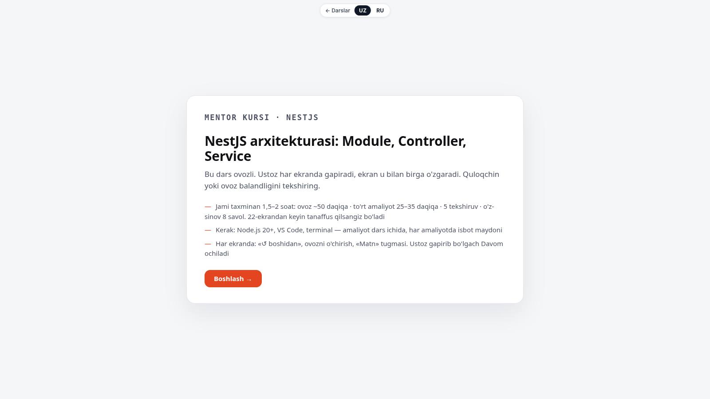<figcaption>Oldin</figcaption></figure><figure>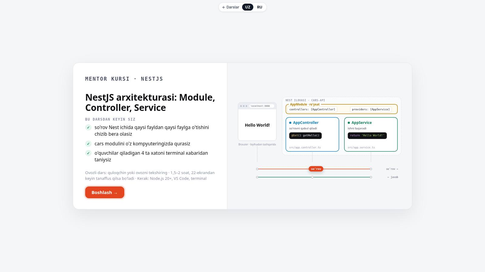<figcaption>Keyin</figcaption></figure></div></article><article><h3>1-ekran · Kirish</h3><p>Reja ro'yxati o'rniga darsning rasmi va yetti bosqich. Har gapda rasmning o'sha qismi o'zgaradi: ichidagi Express, ishlaydigan GET /cars, xato (?), o'quvchi darsidagi so'zlar.</p><div class="pair"><figure>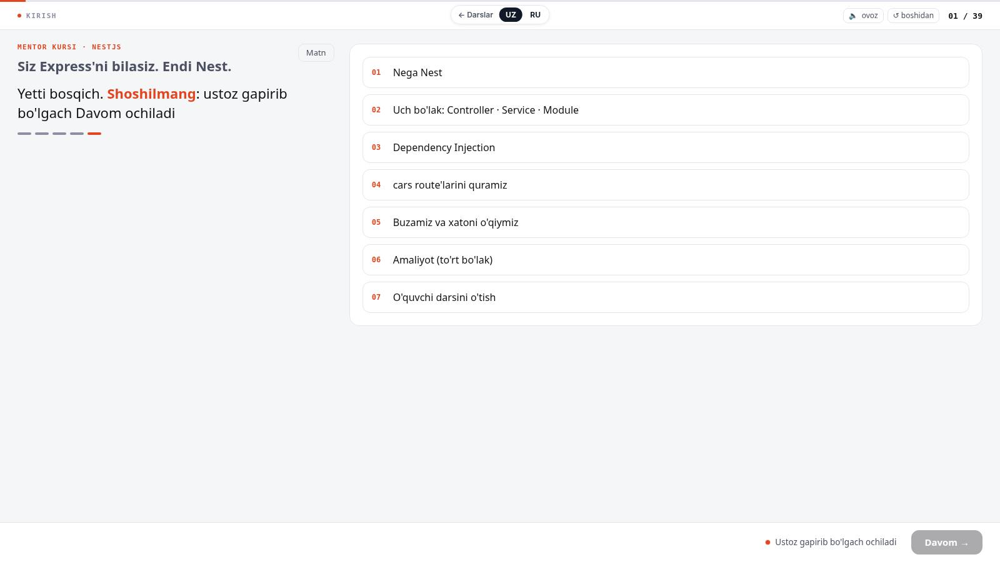<figcaption>Oldin</figcaption></figure><figure>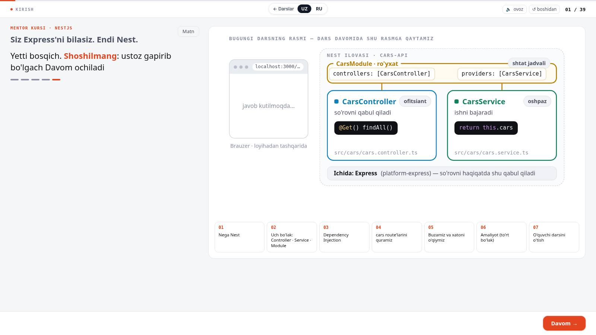<figcaption>Keyin</figcaption></figure></div></article><article><h3>3-ekran · Nest nima beradi</h3><p>Avval Express jamoalari, keyin Nest'ning uch bo'lagi, oxirida rasm ichidagi Express qatori yonadi.</p><div class="pair"><figure>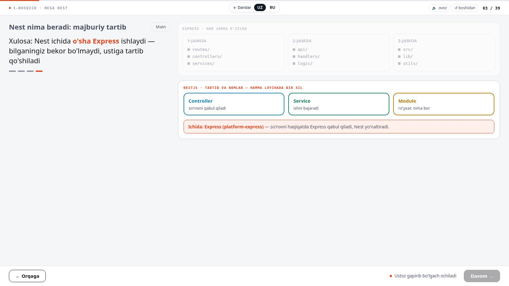<figcaption>Oldin</figcaption></figure><figure>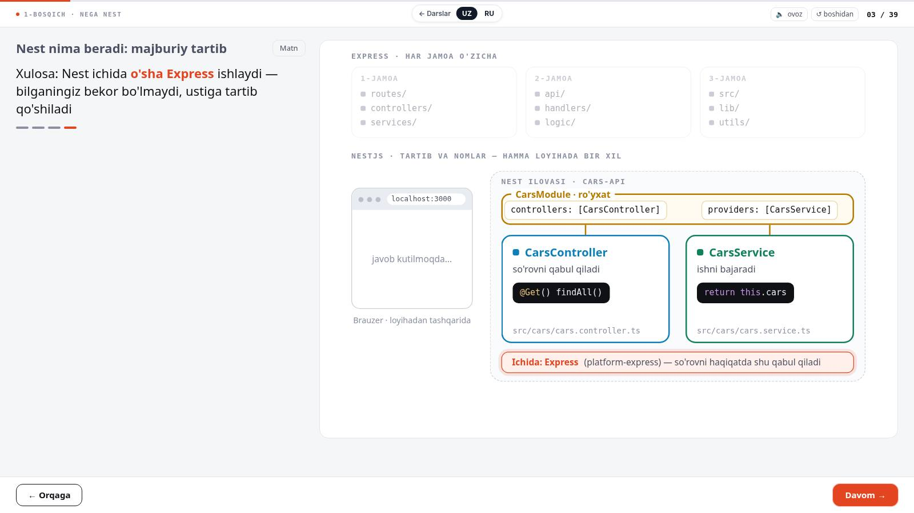<figcaption>Keyin</figcaption></figure></div></article><article><h3>7-ekran · Bitta so'rovning yo'li</h3><p>So'rov qizil yo'lakda boradi, javob yashil yo'lakda qaytadi. Pastda shu paytda bajarilayotgan satr fayl va satr raqami bilan chiqadi.</p><div class="pair"><figure>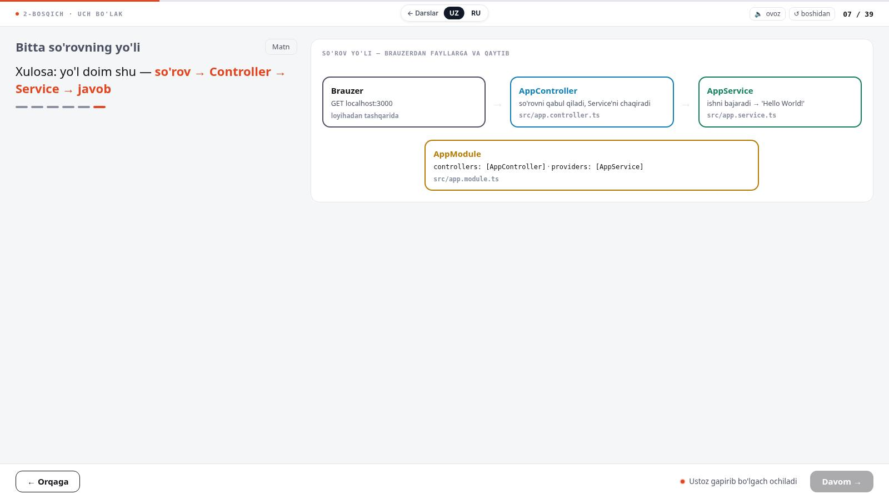<figcaption>Oldin</figcaption></figure><figure>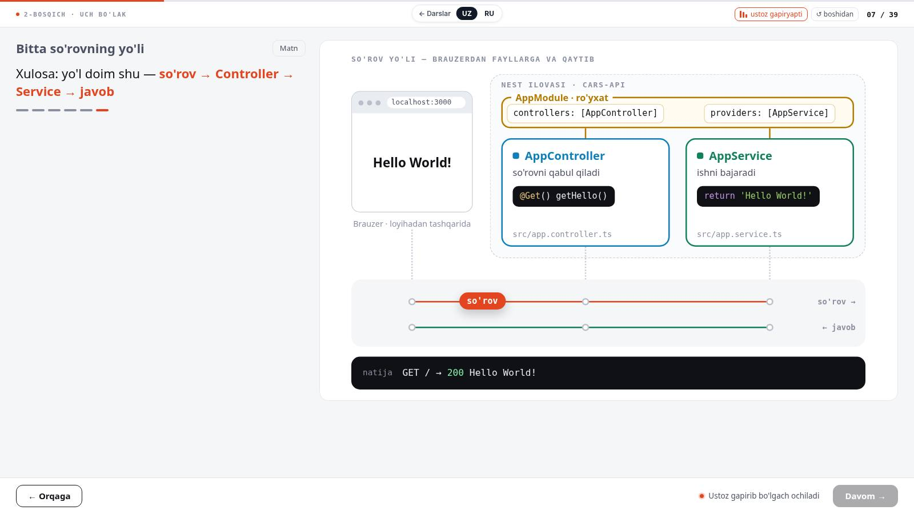<figcaption>Keyin</figcaption></figure></div></article><article><h3>10-ekran · Module — ro'yxat</h3><p>Kod ostida Nest ko'radigan uch ro'yxat, «faylda bor, ro'yxatda yo'q» misoli va chiziqlar bilan bog'langan modullar strukturasi.</p><div class="pair solo"><figure>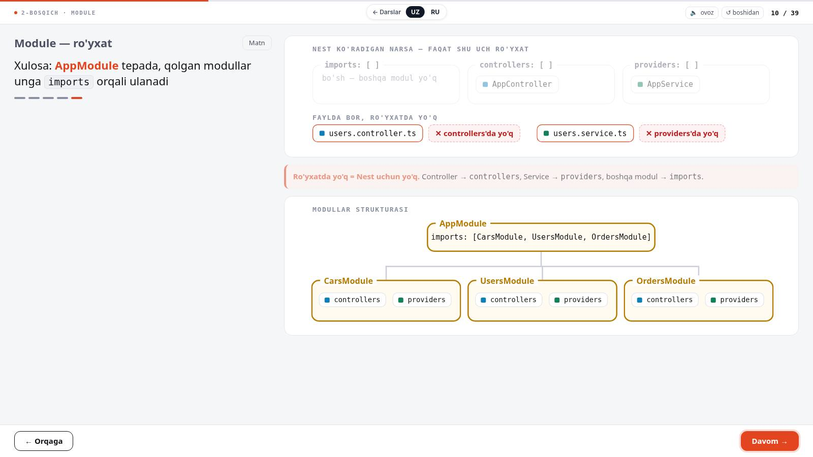<figcaption>Keyin</figcaption></figure></div></article><article><h3>14-ekran · Dependency Injection</h3><p>Nest konteyneri AppService'dan bitta nusxa yaratib, konstruktorga olib boradi. Matnli kartalar o'rniga uchta foyda chizmasi.</p><div class="pair"><figure>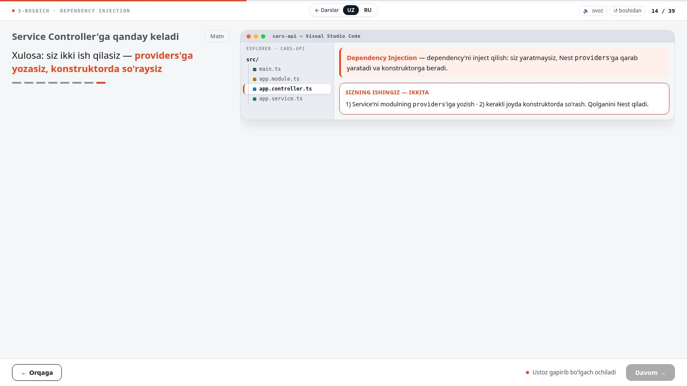<figcaption>Oldin</figcaption></figure><figure>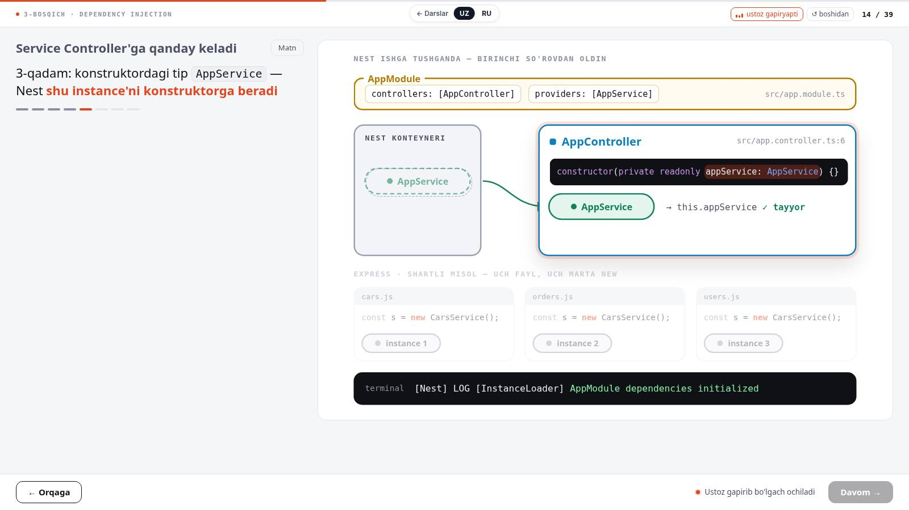<figcaption>Keyin</figcaption></figure></div></article><article><h3>23-ekran · Buzamiz 1 — siz bosasiz</h3><p>Kodda CarsService yonib turadi, chap panelda ko'rsatma chiqadi. Mentor bosgach dars davom etadi: kod, rasm va terminal birga o'zgaradi.</p><div class="pair solo"><figure>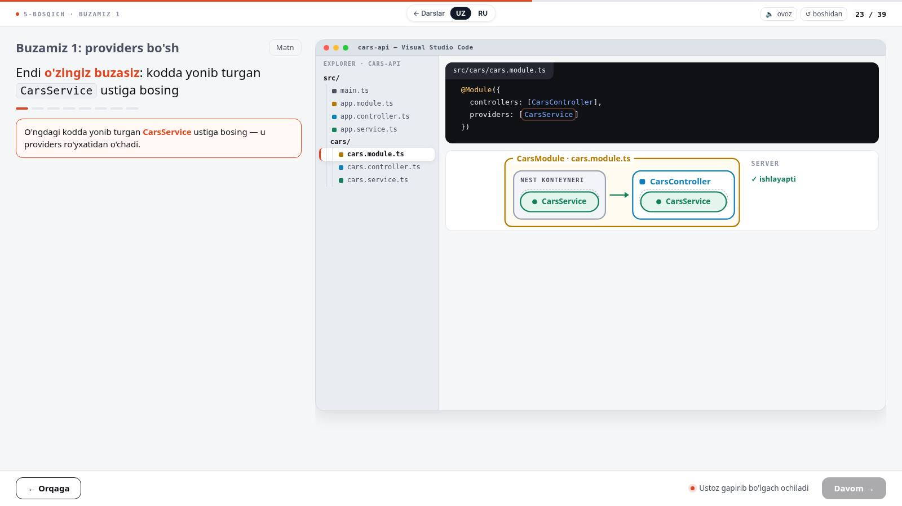<figcaption>Keyin</figcaption></figure></div></article><article><h3>23-ekran · xato bo'laklari</h3><p>Xatoning har bo'lagi raqam bilan rasmdagi joyiga bog'langan: 1 — qaysi klass, 2 — qaysi dependency, 3 — qaysi fayl.</p><div class="pair"><figure>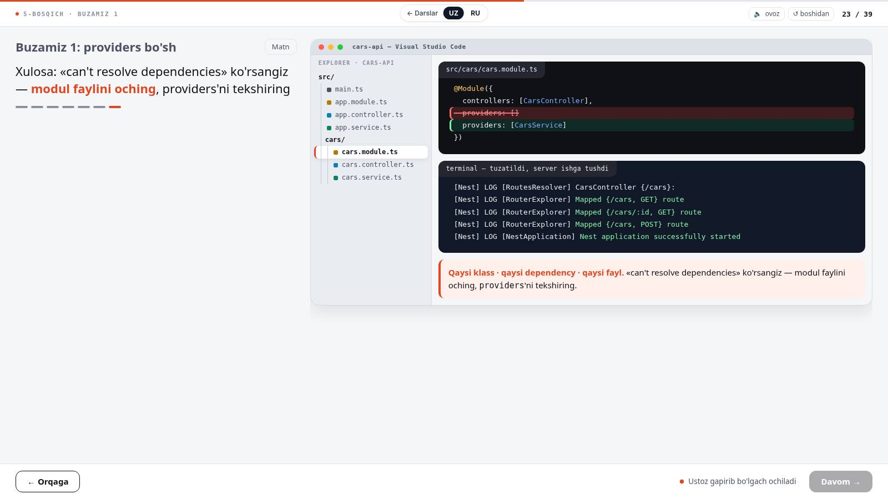<figcaption>Oldin</figcaption></figure><figure>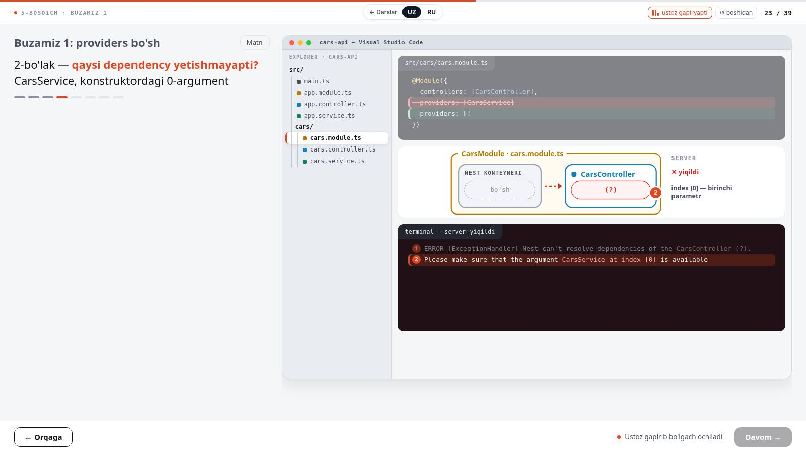<figcaption>Keyin</figcaption></figure></div></article><article><h3>24-ekran · Buzamiz 2</h3><p>AppModule CarsModule'ni ulamagan: CarsModule xiralashgan, «Nest o'qimadi» yozuvi chiqadi, GET /cars → 404.</p><div class="pair solo"><figure>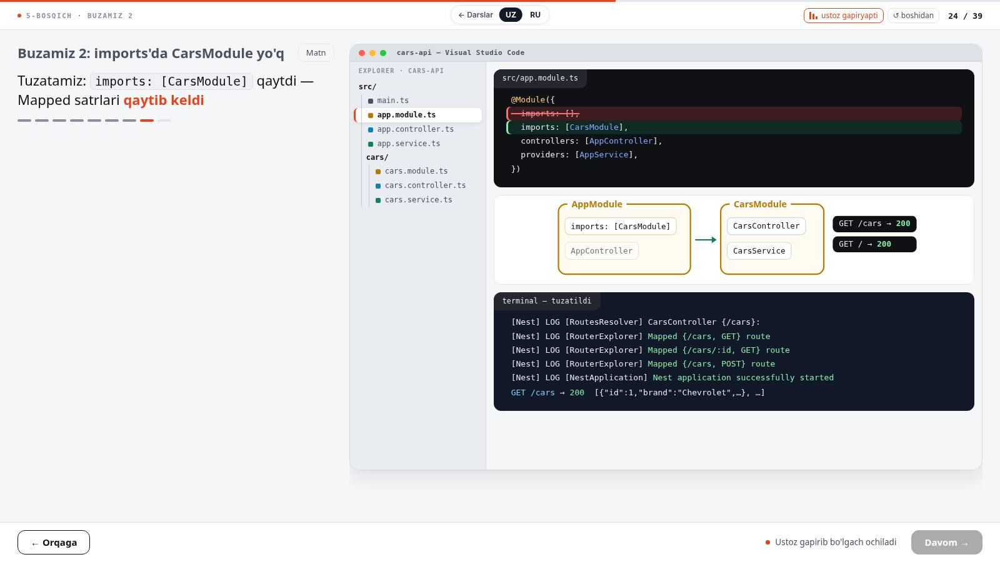<figcaption>Keyin</figcaption></figure></div></article><article><h3>25-ekran · Buzamiz 3</h3><p>@Controller('cars') belgisi yo'qolgan: Nest klassni tanimaydi, «invalid controller» xatosi chiqadi.</p><div class="pair solo"><figure>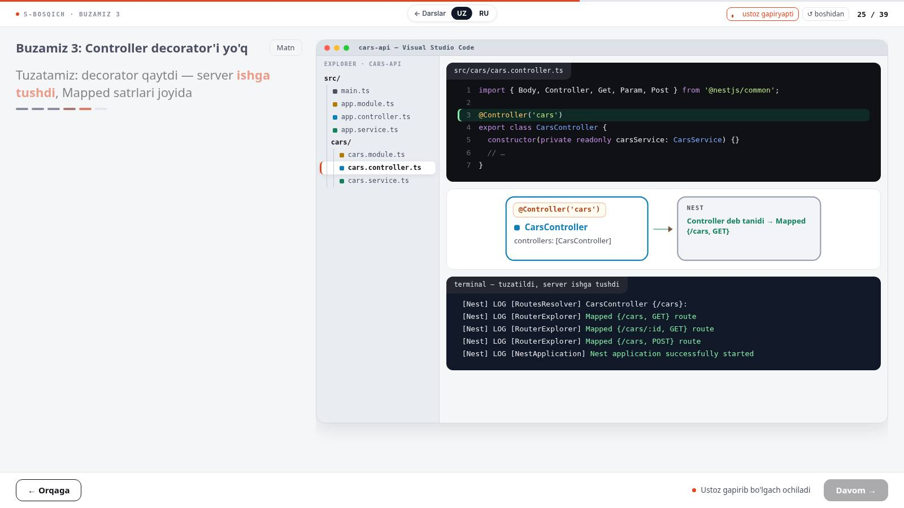<figcaption>Keyin</figcaption></figure></div></article><article><h3>26-ekran · Buzamiz 4</h3><p>@Injectable yo'q bo'lsa, PricingService konstruktorga yetib bormaydi: pricing undefined bo'lib qoladi, so'rov 500 qaytaradi.</p><div class="pair solo"><figure>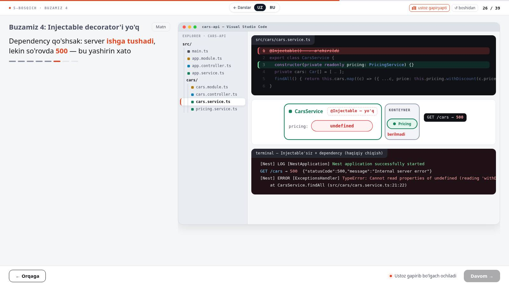<figcaption>Keyin</figcaption></figure></div></article><article><h3>32-ekran · O'quvchi darsining tili</h3><p>Jadval o'rniga o'quvchi loyihasidagi buyurtma yo'li. Har bekatda restoran so'zi va atama birga turadi.</p><div class="pair"><figure>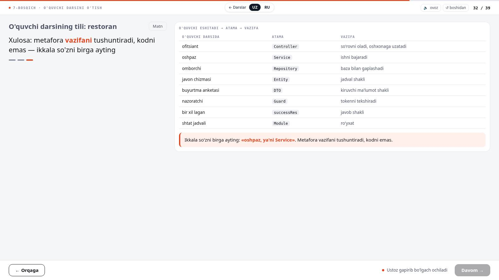<figcaption>Oldin</figcaption></figure><figure>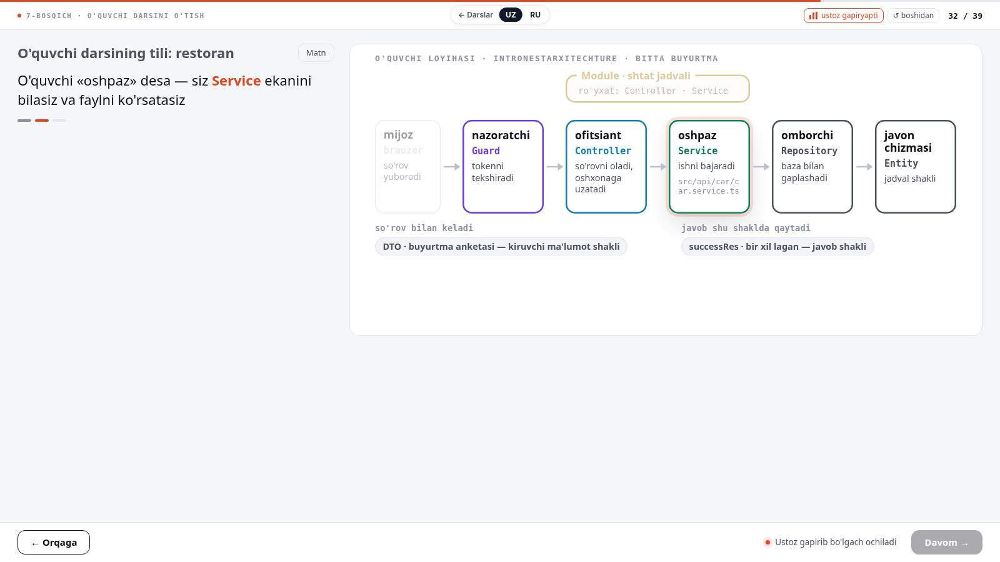<figcaption>Keyin</figcaption></figure></div></article><article><h3>39-ekran · Yakun</h3><p>Xulosaning har bandi darsning o'sha rasmidagi o'z qismini yoritadi.</p><div class="pair solo"><figure>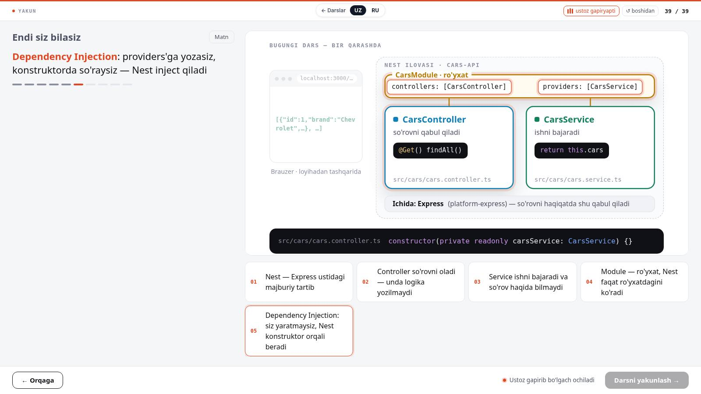<figcaption>Keyin</figcaption></figure></div></article>
    </div>
    <div class="q" id="q-n1">
      <h3>Nest-1 natijasi qabulmi?</h3>
      <div class="opts">
        <label class="opt"><input type="radio" name="n1" id="n1a" value="Qabul — qolgan 11 darsga shu usulda o'tamiz"><span>Qabul — qolgan 11 darsga shu usulda o'tamiz</span></label>
        <label class="opt"><input type="radio" name="n1" id="n1b" value="Tuzatishlar bor (izohda)"><span>Tuzatishlar bor<small>Qaysi ekranda nima o'zgarsin — izohga yozing.</small></span></label>
      </div>
      <textarea id="n1izoh" placeholder="Masalan: 14-ekranda pastki qator ortiqcha…" aria-label="Nest-1 bo'yicha izoh"></textarea>
      <div class="send"><button class="btn pri" id="n1copy">Javobni nusxalash</button><output id="n1copied" for="n1copy"></output></div>
    </div>
  </section>

  <section id="nest2">
    <div class="done-h"><span class="pill">Bajarildi · 20.11</span><h2>Nest-2 — o'quvchi reposi</h2></div>
    <p class="sub">Nest-1 tasdig'idan keyin. Rasm: o'quvchi loyihasida bitta so'rovning to'liq yo'li. Matn o'zgarmadi, faqat 20-ekranga «o'zingiz buzasiz» gapi qo'shildi. Qonun: M51, M52.</p>
    <div class="res"><article><h3>Muqova</h3><p>Chapda dars nima berishi, o'ngda darsning rasmi: o'quvchi loyihasida bitta so'rovning to'liq yo'li.</p><div class="pair solo"><figure>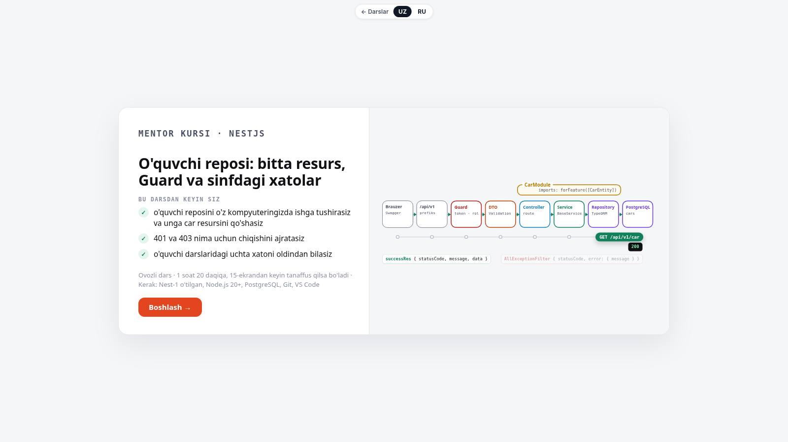<figcaption>Nest-2 · keyin</figcaption></figure></div></article><article><h3>1-ekran · Kirish</h3><p>Sakkiz bekat: Brauzer → /api/v1 → Guard → DTO → Controller → Service → Repository → PostgreSQL. Har gapda rasmning o'z qismi yonadi.</p><div class="pair solo"><figure>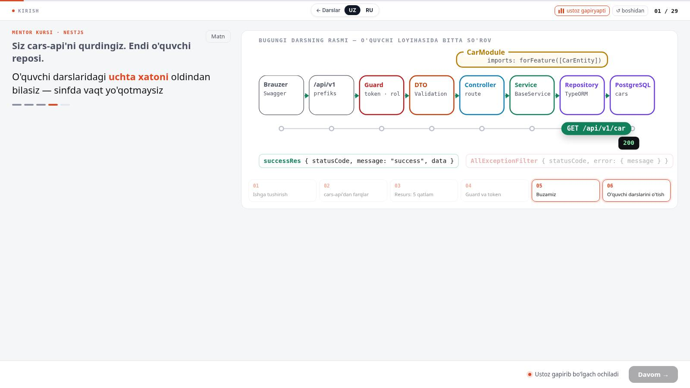<figcaption>Nest-2 · keyin</figcaption></figure></div></article><article><h3>5-ekran · Uch farq</h3><p>Brauzer va JSON kartalari o'rniga o'sha rasm: /admin prefiksda 404, /api/v1/admin Guard'da 401, javobning ikki shakli.</p><div class="pair solo"><figure>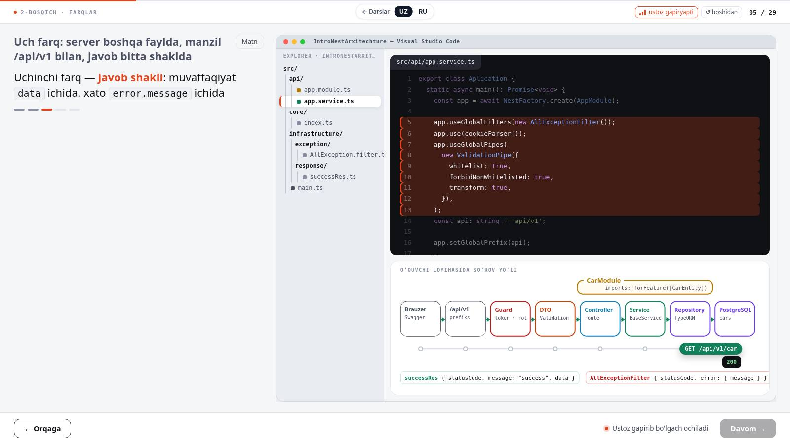<figcaption>Nest-2 · keyin</figcaption></figure></div></article><article><h3>13-ekran · So'rovlar</h3><p>Tanlangan so'rov rasmda qayerda to'xtashi ko'rinadi: 201/200 bazagacha yetadi, 400 DTO'da, 500 bazada.</p><div class="pair solo"><figure>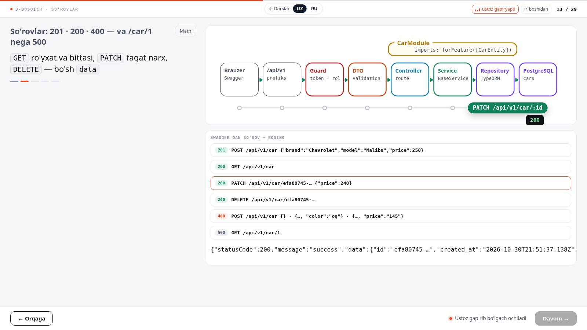<figcaption>Nest-2 · keyin</figcaption></figure></div></article><article><h3>16-ekran · AuthGuard</h3><p>Oldingi kichik sxema o'rniga darsning rasmi: so'rov Guard'da 401 bilan to'xtaydi.</p><div class="pair solo"><figure>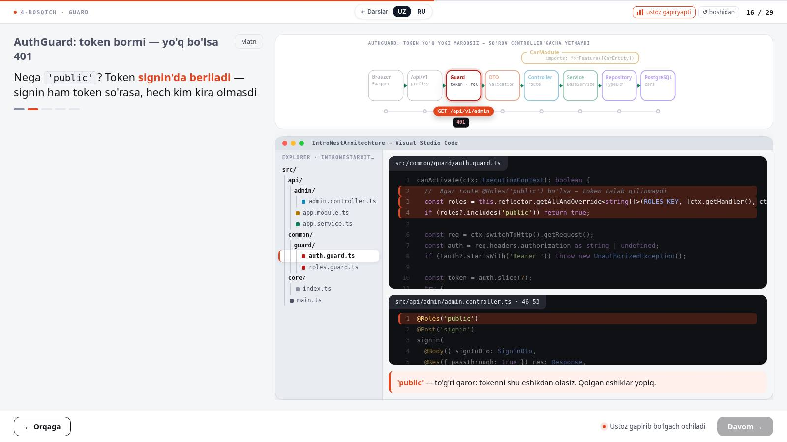<figcaption>Nest-2 · keyin</figcaption></figure></div></article><article><h3>20-ekran · Buzamiz — siz bosasiz</h3><p>Mentor forFeature'ni o'zi bosib o'chiradi. Kichik rasm Nest-1 dagidek: CarService konstruktorida (?), xato bo'laklari 1·2·3.</p><div class="pair solo"><figure>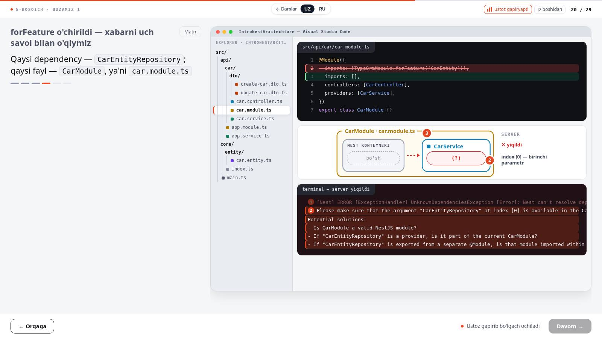<figcaption>Nest-2 · keyin</figcaption></figure></div></article><article><h3>25-ekran · O'quvchi darsidagi so'zlar</h3><p>Jadval o'rniga har bekatda o'quvchi darsidagi so'z: qo'riqchi, buyurtma anketasi, ofitsiant, retsept kitobi, omborchi, javon chizmasi.</p><div class="pair solo"><figure>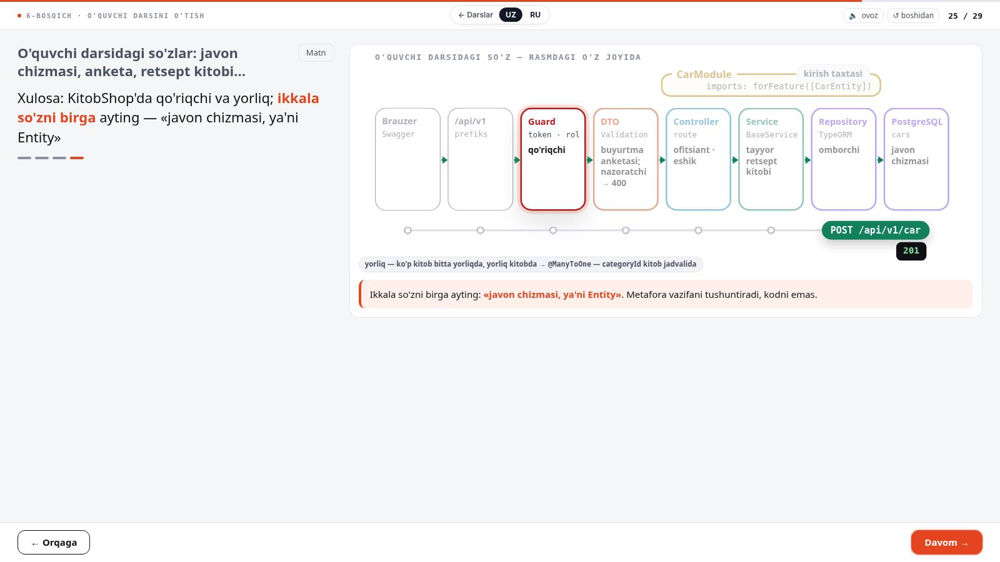<figcaption>Nest-2 · keyin</figcaption></figure></div></article><article><h3>29-ekran · Yakun</h3><p>Xulosaning har bandi o'sha rasmdagi o'z bekatlarini yoritadi.</p><div class="pair solo"><figure>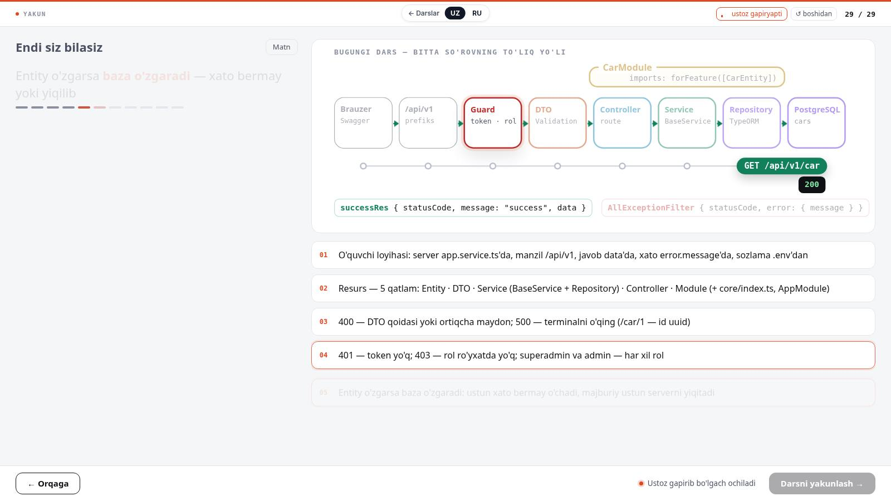<figcaption>Nest-2 · keyin</figcaption></figure></div></article></div>
  </section>

  <section id="pg1">
    <div class="done-h"><span class="pill">Bajarildi · 20.11</span><h2>PostgreSQL-1 — Mongo'dan PostgreSQL'ga</h2></div>
    <p class="sub">Rasm: blog bazasi — users va posts, tashqi kalit, JOIN chiziqlari, qoida buzgan yozuv (✕). Matn va ovoz o'zgarmadi.</p>
    <div class="res"><article><h3>Muqova</h3><p>Chapda dars nima berishi, o'ngda blog bazasi va JOIN.</p><div class="pair solo"><figure>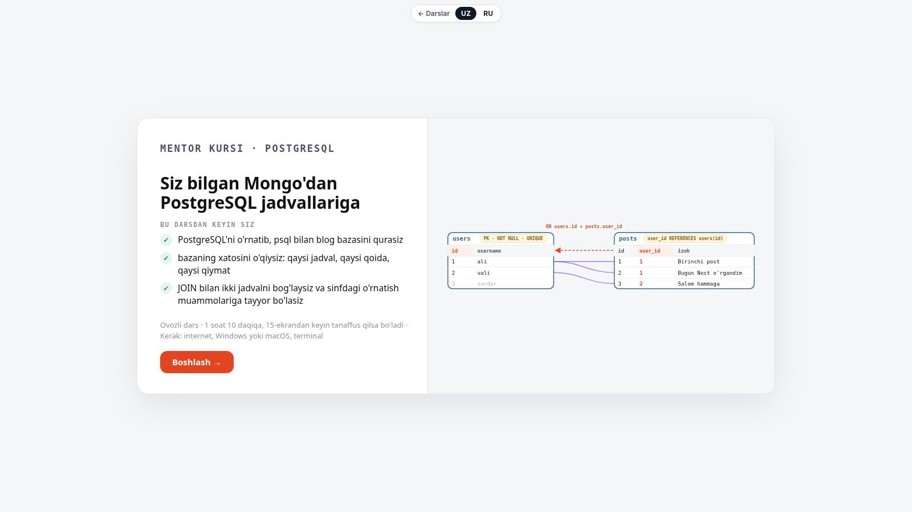<figcaption>PostgreSQL-1 — Mongo'dan PostgreSQL'ga · keyin</figcaption></figure></div></article><article><h3>1-ekran · Kirish</h3><p>Reja ro'yxati va psql chiqishi o'rniga: dars oxirida sizda bo'ladigan baza, JOIN so'rovi va natijasi.</p><div class="pair solo"><figure>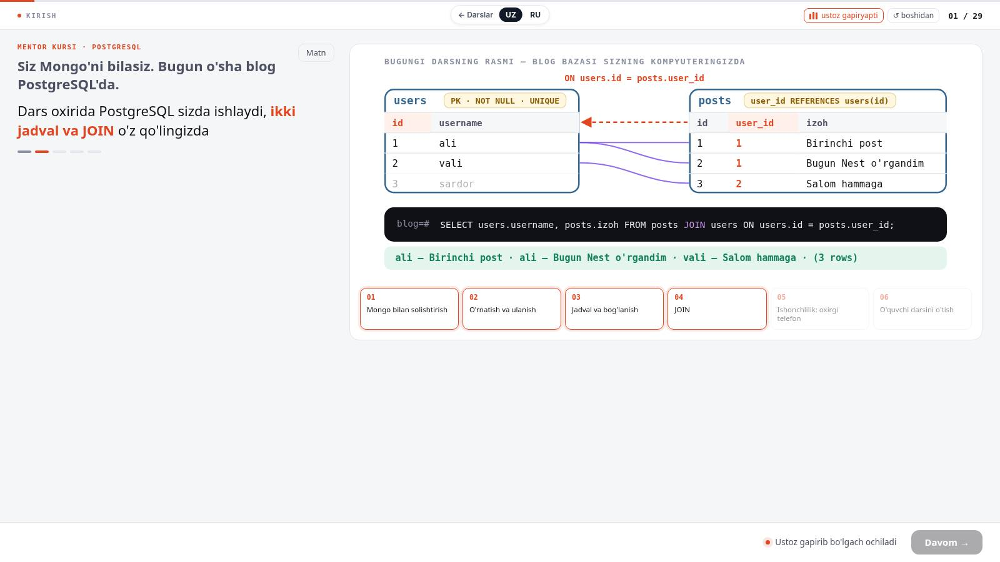<figcaption>PostgreSQL-1 — Mongo'dan PostgreSQL'ga · keyin</figcaption></figure></div></article><article><h3>12-ekran · REFERENCES</h3><p>\d posts chiqishi ostida: tashqi kalit bazaning o'zida — posts.user_id → users.id.</p><div class="pair solo"><figure>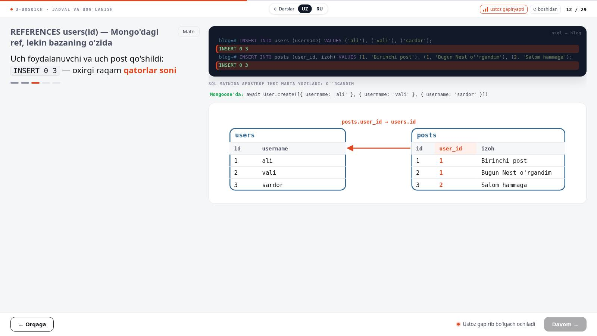<figcaption>PostgreSQL-1 — Mongo'dan PostgreSQL'ga · keyin</figcaption></figure></div></article><article><h3>13-ekran · Baza o'zi tekshiradi</h3><p>Qoida buzgan yozuv jadvalga kirmaydi: 99-muallifli post chizilgan va sababi yozilgan.</p><div class="pair solo"><figure>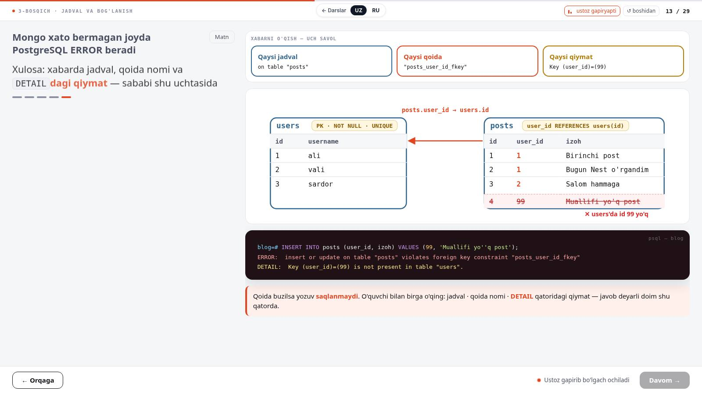<figcaption>PostgreSQL-1 — Mongo'dan PostgreSQL'ga · keyin</figcaption></figure></div></article><article><h3>16-ekran · JOIN</h3><p>Ikki jadval o'rniga JOIN chiziqlari: har post o'z muallifiga ulanadi, sardor juftsiz (LEFT JOIN'da NULL bilan).</p><div class="pair solo"><figure>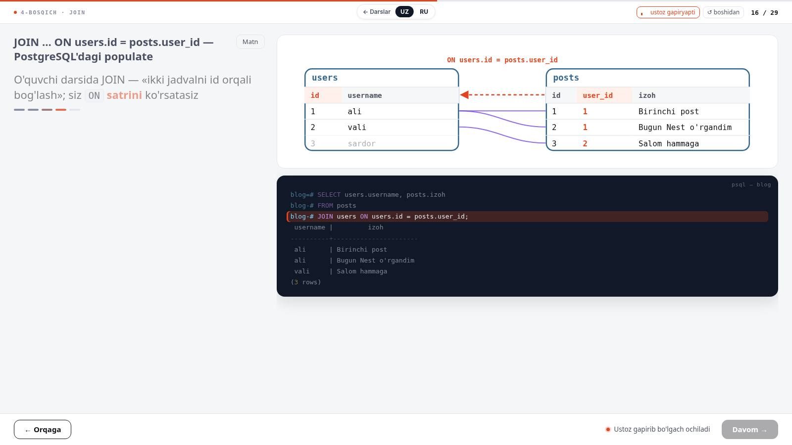<figcaption>PostgreSQL-1 — Mongo'dan PostgreSQL'ga · keyin</figcaption></figure></div></article><article><h3>29-ekran · Yakun</h3><p>Xulosa bandlari o'sha blog bazasi ustida.</p><div class="pair solo"><figure>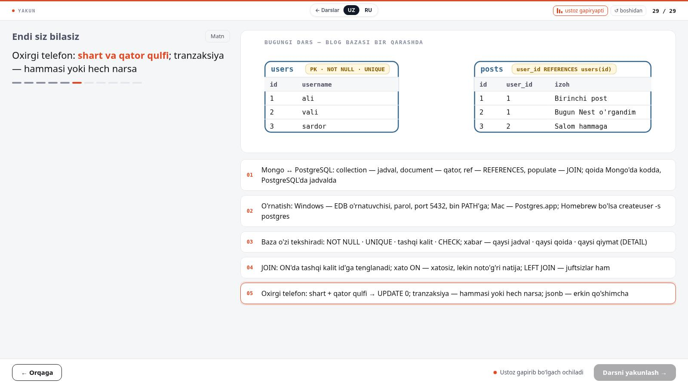<figcaption>PostgreSQL-1 — Mongo'dan PostgreSQL'ga · keyin</figcaption></figure></div></article></div>
  </section>
  <section id="pg2">
    <div class="done-h"><span class="pill">Bajarildi · 20.11</span><h2>PostgreSQL-2 — CRUD va Express'dan bazaga</h2></div>
    <p class="sub">Rasm: bitta baza, ikki yo'l — psql to'g'ridan-to'g'ri va Postman → Express (express.json · route · pool.query) → jadval, javob qaytish yo'li va bajarilayotgan satr. Faqat 22- va 23-ekranga «o'zingiz buzasiz» gapi qo'shildi.</p>
    <div class="res"><article><h3>Muqova</h3><p>Chapda dars nima berishi, o'ngda darsning rasmi: Spark qo'shildi (201), psql'da UPDATE 1.</p><div class="pair solo"><figure>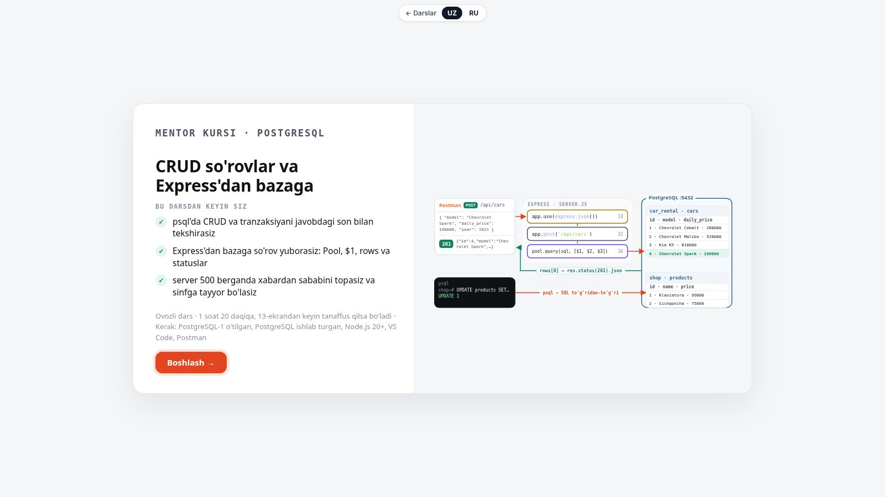<figcaption>PostgreSQL-2 — CRUD va Express'dan bazaga · keyin</figcaption></figure></div></article><article><h3>1-ekran · Kirish</h3><p>Reja ro'yxati va ikki kartaning o'rniga darsning rasmi; har gapda bitta yo'l yonadi: avval psql, keyin Express.</p><div class="pair solo"><figure>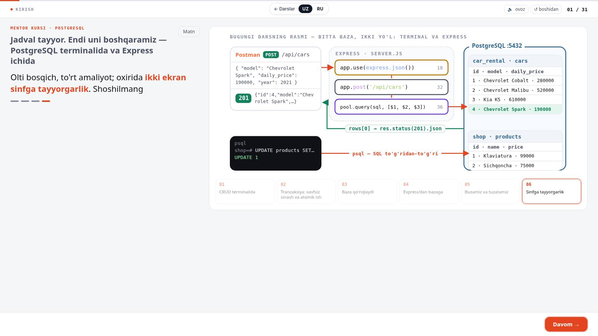<figcaption>PostgreSQL-2 — CRUD va Express'dan bazaga · keyin</figcaption></figure></div></article><article><h3>18-ekran · GET yo'li</h3><p>Xulosaning yuqori oqim kartasi o'rniga o'sha rasm: GET /api/cars → SELECT → rows: 3 · rowCount: 3 → 200. Pastdagi ikki karta qoldi.</p><div class="pair solo"><figure>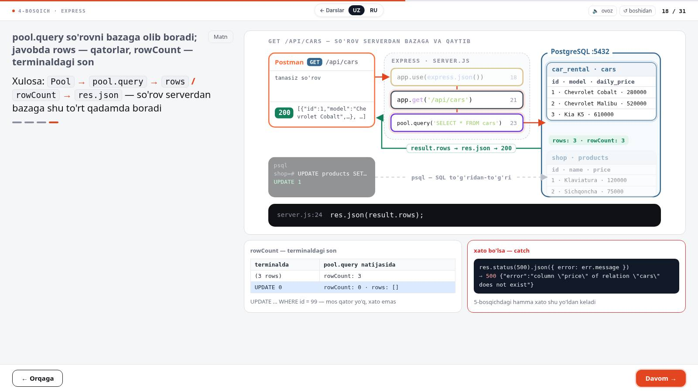<figcaption>PostgreSQL-2 — CRUD va Express'dan bazaga · keyin</figcaption></figure></div></article><article><h3>22-ekran · Buzamiz 1 — siz bosasiz</h3><p>36-satrdagi daily_price yonib turadi; mentor bosgach price bo'ladi. Kod ostida kichik rasm, javob hali «?».</p><div class="pair solo"><figure>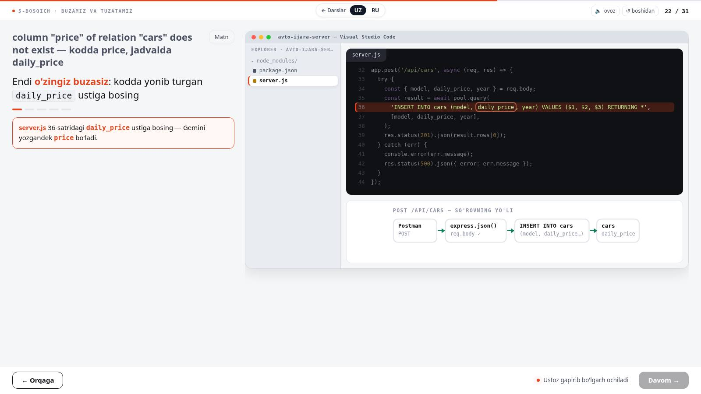<figcaption>PostgreSQL-2 — CRUD va Express'dan bazaga · keyin</figcaption></figure></div></article><article><h3>22-ekran · xato bo'laklari</h3><p>POST → 500: 1 — ustun price (INSERT), 2 — jadval cars; terminal satri ham 1 bilan belgilangan.</p><div class="pair solo"><figure>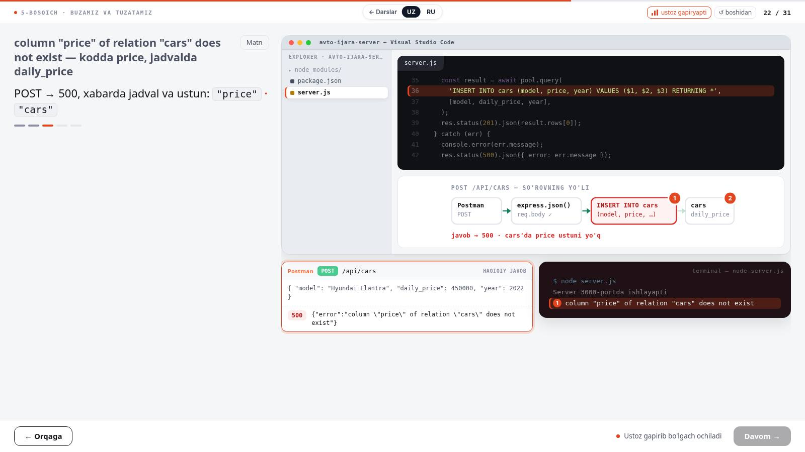<figcaption>PostgreSQL-2 — CRUD va Express'dan bazaga · keyin</figcaption></figure></div></article><article><h3>22-ekran · Xulosa</h3><p>To'rt matnli karta o'rniga rasm: cars'da price yo'q, javob catch → 500, pastda \d cars ustunlari.</p><div class="pair solo"><figure>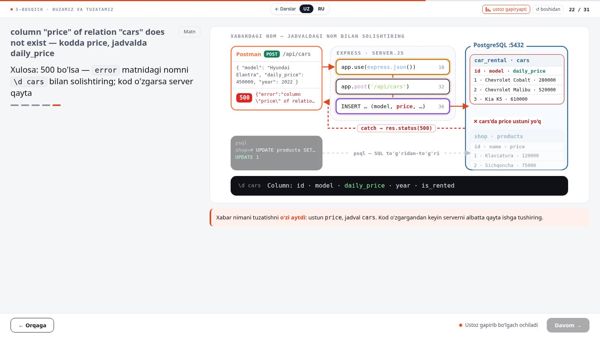<figcaption>PostgreSQL-2 — CRUD va Express'dan bazaga · keyin</figcaption></figure></div></article><article><h3>23-ekran · Buzamiz 2 — siz bosasiz</h3><p>18-satr app.use(express.json()) bosilgach o'chadi; rasmda express.json chizilgan, javob «?».</p><div class="pair solo"><figure>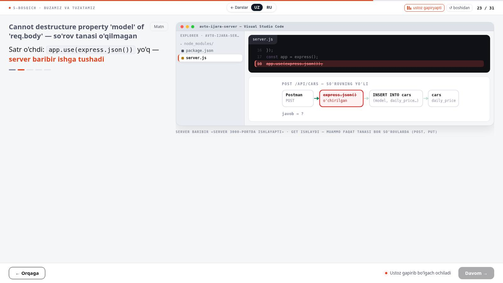<figcaption>PostgreSQL-2 — CRUD va Express'dan bazaga · keyin</figcaption></figure></div></article><article><h3>31-ekran · Yakun</h3><p>Stansiya chiplari o'rniga o'sha rasm; olti band rasm ostida ixcham to'rda, joriy band yoritiladi.</p><div class="pair solo"><figure>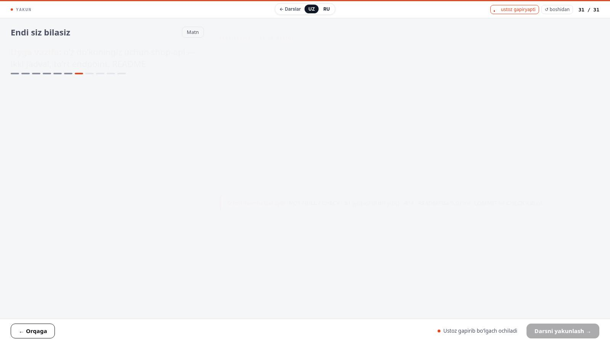<figcaption>PostgreSQL-2 — CRUD va Express'dan bazaga · keyin</figcaption></figure></div></article></div>
  </section>
  <section id="tgpg">
    <div class="done-h"><span class="pill">Bajarildi · 20.11</span><h2>Telegraf + PostgreSQL — buyurtma boti bazaga</h2></div>
    <p class="sub">Rasm — «Buyurtma boti» xaritasi, keyingi 7 dars uchun ham umumiy: Telegram → OrderBotNest (telegram · catalog · user · cart · order) → Xotira yoki PostgreSQL. Faqat 20-ekranga «o'zingiz buzasiz» gapi qo'shildi.</p>
    <div class="res"><article><h3>Muqova</h3><p>Chapda dars nima berishi, o'ngda buyurtma boti: buyurtma #1 bazada.</p><div class="pair solo"><figure>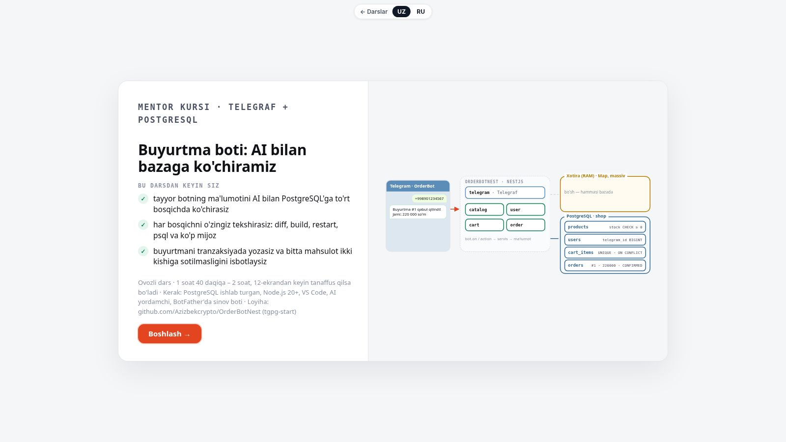<figcaption>Telegraf + PostgreSQL — buyurtma boti bazaga · keyin</figcaption></figure></div></article><article><h3>1-ekran · Kirish</h3><p>Reja va ikki karta o'rniga darsning rasmi; pastda psql'dagi haqiqiy buyurtma satri.</p><div class="pair solo"><figure>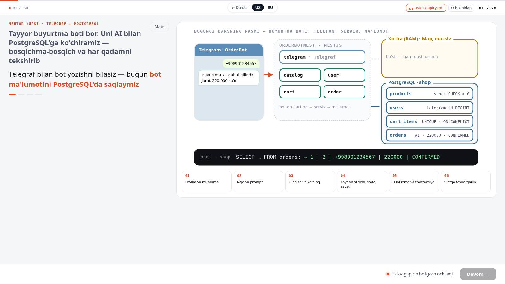<figcaption>Telegraf + PostgreSQL — buyurtma boti bazaga · keyin</figcaption></figure></div></article><article><h3>3-ekran · Restart</h3><p>Node/RAM/Disk kartalari o'rniga: xotiradagi to'rt tuzilma restartda o'chdi, bot «Savat bo'sh» dedi.</p><div class="pair solo"><figure>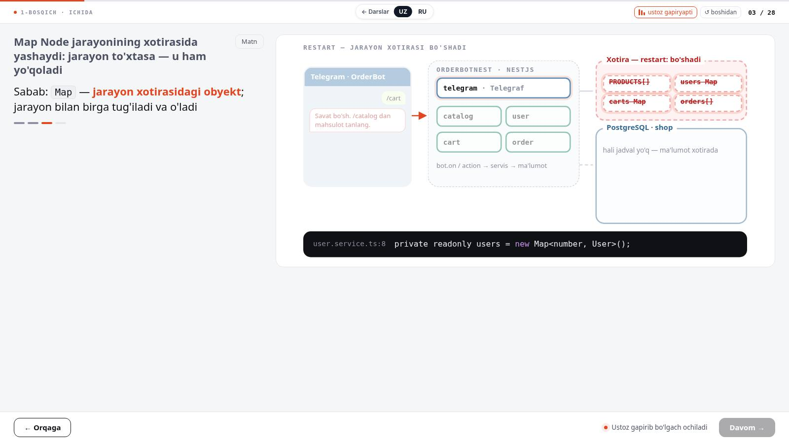<figcaption>Telegraf + PostgreSQL — buyurtma boti bazaga · keyin</figcaption></figure></div></article><article><h3>6-ekran · To'rt bosqich</h3><p>To'rt karta o'rniga: har ma'lumot qaysi bosqichda bazaga ko'chishi raqam bilan.</p><div class="pair solo"><figure>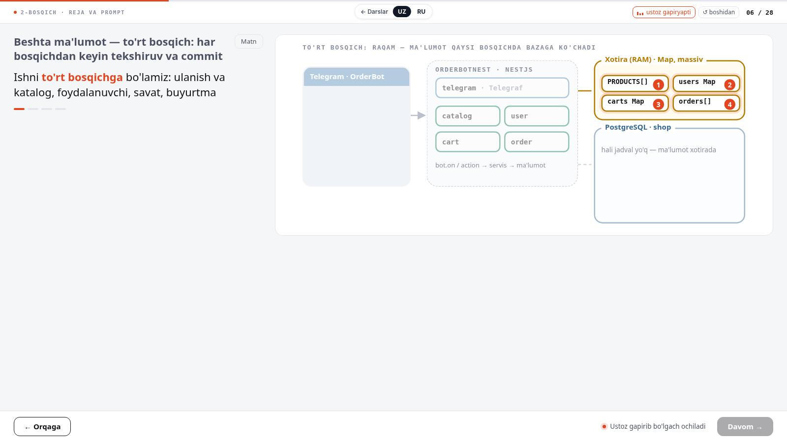<figcaption>Telegraf + PostgreSQL — buyurtma boti bazaga · keyin</figcaption></figure></div></article><article><h3>11-ekran · Oraliq holat</h3><p>Ombor bazada (Klaviatura 7, Kolonka 8), buyurtma xotirada edi va restartda o'chdi.</p><div class="pair solo"><figure>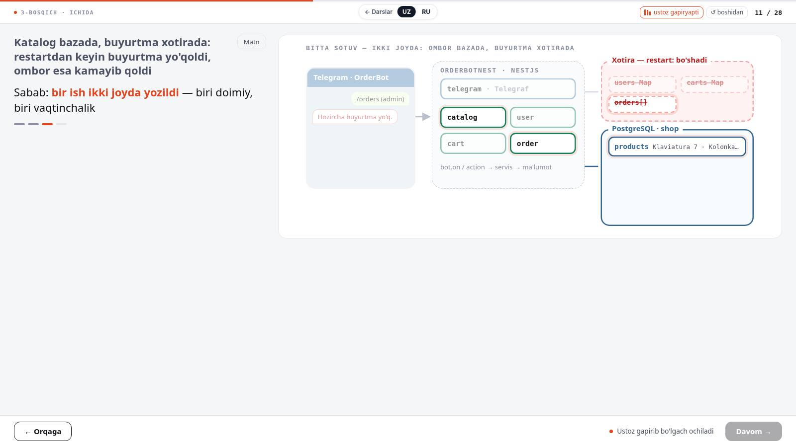<figcaption>Telegraf + PostgreSQL — buyurtma boti bazaga · keyin</figcaption></figure></div></article><article><h3>18-ekran · Uch jadval</h3><p>Bitta buyurtma: products UPDATE, orders INSERT, cart_items DELETE — bitta tranzaksiyada.</p><div class="pair solo"><figure>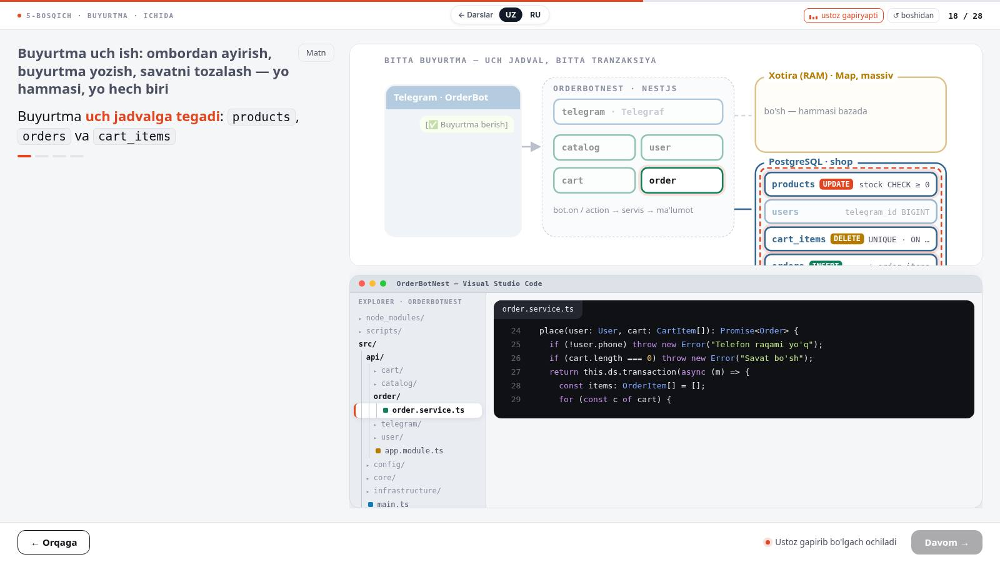<figcaption>Telegraf + PostgreSQL — buyurtma boti bazaga · keyin</figcaption></figure></div></article><article><h3>18-ekran · ROLLBACK</h3><p>order_items yiqildi: uch jadval ham o'zgarmadi — terminaldagi haqiqiy qiymatlar bilan.</p><div class="pair solo"><figure>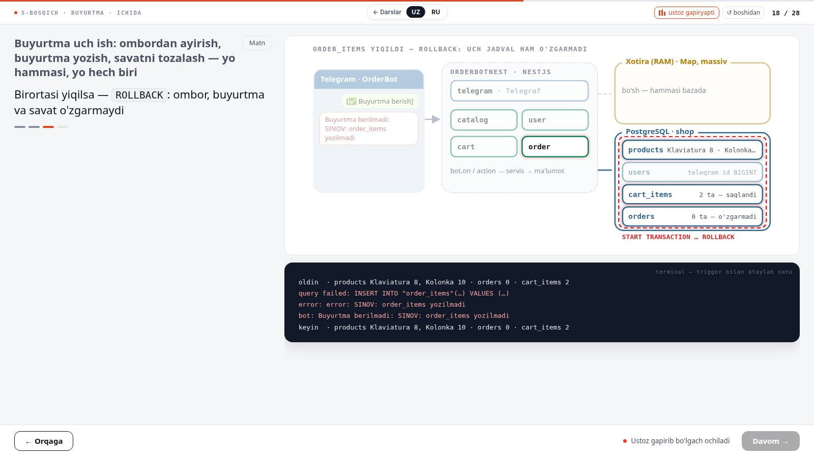<figcaption>Telegraf + PostgreSQL — buyurtma boti bazaga · keyin</figcaption></figure></div></article><article><h3>20-ekran · Buzamiz — siz bosasiz</h3><p>Tuzatilgan koddagi lock yonib turadi; mentor bosgach kod qulfsiz findOneBy'ga o'tadi. Kichik rasmda javob «?».</p><div class="pair solo"><figure>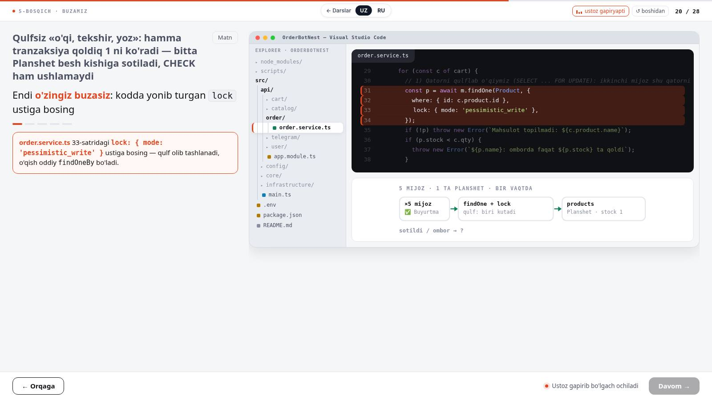<figcaption>Telegraf + PostgreSQL — buyurtma boti bazaga · keyin</figcaption></figure></div></article><article><h3>20-ekran · xato bo'laklari</h3><p>Race: 5 / 0, CHECK ushlamadi; 1 — qulfsiz o'qish (31), 2 — yozish (36–37).</p><div class="pair solo"><figure><figcaption>Telegraf + PostgreSQL — buyurtma boti bazaga · keyin</figcaption></figure></div></article><article><h3>28-ekran · Yakun</h3><p>Stansiya chiplari o'rniga o'sha rasm; bandlar rasm ostida ixcham to'rda.</p><div class="pair solo"><figure><figcaption>Telegraf + PostgreSQL — buyurtma boti bazaga · keyin</figcaption></figure></div></article></div>
  </section>
  <section id="jest1">
    <div class="done-h"><span class="pill">Bajarildi · 20.11</span><h2>Jest-1 — OrderBotNest'ga birinchi testlar</h2></div>
    <p class="sub">O'sha «Buyurtma boti» xaritasi, ostida Jest qatori: test faqat telegram modulidagi funksiyani chaqiradi — Telegram ham, baza ham kerak emas. Faqat 14-ekranga «o'zingiz buzasiz» gapi qo'shildi.</p>
    <div class="res"><article><h3>Muqova</h3><p>Chapda dars nima berishi, o'ngda rasm: texts.spec.ts va keyboards.spec.ts — 10 passed.</p><div class="pair solo"><figure><figcaption>Jest-1 — OrderBotNest'ga birinchi testlar · keyin</figcaption></figure></div></article><article><h3>1-ekran · Kirish</h3><p>Reja ro'yxati va terminal o'rniga rasm; har gapda Jest qatori o'zgaradi: 10 passed → birinchi testda FAIL → AI'ning 36 testi.</p><div class="pair solo"><figure><figcaption>Jest-1 — OrderBotNest'ga birinchi testlar · keyin</figcaption></figure></div></article><article><h3>2-ekran · Smoke</h3><p>Ikki karta o'rniga rasm: smoke butun botni yuritadi — ×5 mijoz, baza, restart, NATIJA 5/5.</p><div class="pair solo"><figure><figcaption>Jest-1 — OrderBotNest'ga birinchi testlar · keyin</figcaption></figure></div></article><article><h3>2-ekran · Unit-test</h3><p>O'sha rasmda faqat telegram moduli yonadi; ostida .env'siz npm test — 10 passed.</p><div class="pair solo"><figure><figcaption>Jest-1 — OrderBotNest'ga birinchi testlar · keyin</figcaption></figure></div></article><article><h3>14-ekran · Buzamiz — siz bosasiz</h3><p>39-satrdagi «|| o.status === 'CANCELLED'» yonib turadi; mentor bosgach shart buziladi, kichik rasmda javob «?».</p><div class="pair solo"><figure><figcaption>Jest-1 — OrderBotNest'ga birinchi testlar · keyin</figcaption></figure></div></article><article><h3>14-ekran · xato bo'laklari</h3><p>1 failed, 2 passed: 1 — test nomi (qoida), 2 — Received (klaviatura keldi); terminal satrlari ham shu raqamlar bilan.</p><div class="pair solo"><figure><figcaption>Jest-1 — OrderBotNest'ga birinchi testlar · keyin</figcaption></figure></div></article><article><h3>10-ekran · tuzatish</h3><p>Chizmadagi «≠» belgisi so'zga almashdi («teng emas») — til darvozasi buni xato deb to'xtatayotgan edi (mendan oldin bor edi).</p><div class="pair solo"><figure><figcaption>Jest-1 — OrderBotNest'ga birinchi testlar · keyin</figcaption></figure></div></article><article><h3>25-ekran · Yakun</h3><p>Stansiya chiplari o'rniga o'sha rasm; bandlar ixcham to'rda.</p><div class="pair solo"><figure><figcaption>Jest-1 — OrderBotNest'ga birinchi testlar · keyin</figcaption></figure></div></article></div>
  </section>
  <section id="jest2">
    <div class="done-h"><span class="pill">Bajarildi · 20.11</span><h2>Jest-2 — xato yo'li: bot to'g'ri buziladimi</h2></div>
    <p class="sub">O'sha «Buyurtma boti» xaritasi va Jest qatori: telefon qoidasi (telegram · phone.ts), buyurtma xatolari (order · baza o'rniga mock), sayt API (supertest). 11- va 16-ekranga «o'zingiz buzasiz» gapi qo'shildi.</p>
    <div class="res"><article><h3>Muqova</h3><p>Chapda dars nima berishi, o'ngda rasm: 5 fayl, 25 passed.</p><div class="pair solo"><figure><figcaption>Jest-2 — xato yo'li: bot to'g'ri buziladimi · keyin</figcaption></figure></div></article><article><h3>1-ekran · Kirish</h3><p>Reja va terminal o'rniga rasm: bugungi uch joy — telegram moduli, order moduli va Jest qatori.</p><div class="pair solo"><figure><figcaption>Jest-2 — xato yo'li: bot to'g'ri buziladimi · keyin</figcaption></figure></div></article><article><h3>11-ekran · Buzamiz 1 — siz bosasiz</h3><p>To'g'ri testdagi 51-satr (await … .rejects) yonib turadi; mentor bosgach test sinxron toThrow shakliga o'tadi.</p><div class="pair solo"><figure><figcaption>Jest-2 — xato yo'li: bot to'g'ri buziladimi · keyin</figcaption></figure></div></article><article><h3>11-ekran · natija yo'q</h3><p>PASS ham, FAIL ham yo'q — jarayon quladi: 1 — 51-satr o'ram, 2 — Node.js v24.18.0.</p><div class="pair solo"><figure><figcaption>Jest-2 — xato yo'li: bot to'g'ri buziladimi · keyin</figcaption></figure></div></article><article><h3>16-ekran · Buzamiz 2 — siz bosasiz</h3><p>36-satrdagi «<» yonib turadi; kichik rasm: omborda 2, savatda 2 — buyurtma qabul.</p><div class="pair solo"><figure><figcaption>Jest-2 — xato yo'li: bot to'g'ri buziladimi · keyin</figcaption></figure></div></article><article><h3>16-ekran · chegara testi</h3><p><= bilan 5-test qizil: 1 — 36-satr shart, 2 — «faqat 2 ta qoldi».</p><div class="pair solo"><figure><figcaption>Jest-2 — xato yo'li: bot to'g'ri buziladimi · keyin</figcaption></figure></div></article><article><h3>25-ekran · Yakun</h3><p>Stansiya chiplari o'rniga o'sha rasm; bandlar ixcham to'rda.</p><div class="pair solo"><figure><figcaption>Jest-2 — xato yo'li: bot to'g'ri buziladimi · keyin</figcaption></figure></div></article></div>
  </section>
  <section id="cicd1">
    <div class="done-h"><span class="pill">Bajarildi · 20.11</span><h2>CI/CD-1 — har push'da lenta</h2></div>
    <p class="sub">O'sha «Buyurtma boti» xaritasi, ostida GitHub Actions lentasi: botning hamma moduli toza mashinada yig'iladi va sinaladi (npm ci → tsc → npm test → build). 6- va 10-ekranga «o'zingiz buzasiz» gapi qo'shildi.</p>
    <div class="res"><article><h3>Muqova</h3><p>Chapda dars nima berishi, o'ngda rasm: lentaning to'rt qadami yashil.</p><div class="pair solo"><figure><figcaption>CI/CD-1 — har push'da lenta · keyin</figcaption></figure></div></article><article><h3>1-ekran · Kirish</h3><p>Reja va run oynasi o'rniga rasm; uchinchi gapda lenta qizil (npm test ✕, build skipped).</p><div class="pair solo"><figure><figcaption>CI/CD-1 — har push'da lenta · keyin</figcaption></figure></div></article><article><h3>6-ekran · Buzamiz 1 — siz bosasiz</h3><p>36-satrdagi «<» yonib turadi; kichik rasm: npm ci && tsc ✓, npm test va build — hali «?».</p><div class="pair solo"><figure><figcaption>CI/CD-1 — har push'da lenta · keyin</figcaption></figure></div></article><article><h3>6-ekran · && zanjiri</h3><p>1 — FAIL, 2 — chiqish kodi 1: build boshlanmadi, zanjir uzildi.</p><div class="pair solo"><figure><figcaption>CI/CD-1 — har push'da lenta · keyin</figcaption></figure></div></article><article><h3>10-ekran · Buzamiz 2 — siz bosasiz</h3><p>Yana «<» ni bosish, keyin push.</p><div class="pair solo"><figure><figcaption>CI/CD-1 — har push'da lenta · keyin</figcaption></figure></div></article><article><h3>10-ekran · qizil run</h3><p>Haqiqiy run: npm test ✕ (1), npm run build skipped (2), Process completed with exit code 1.</p><div class="pair solo"><figure><figcaption>CI/CD-1 — har push'da lenta · keyin</figcaption></figure></div></article><article><h3>25-ekran · Yakun</h3><p>Stansiya chiplari o'rniga o'sha rasm; «to'rt tuzoq» va «Missing: webpack» bandlarida lenta qizil.</p><div class="pair solo"><figure><figcaption>CI/CD-1 — har push'da lenta · keyin</figcaption></figure></div></article></div>
  </section>
  <section id="cicd2">
    <div class="done-h"><span class="pill">Bajarildi · 20.11</span><h2>CI/CD-2 — GitHub Actions ichida</h2></div>
    <p class="sub">O'sha xarita: lenta ikki job — test (bazasiz) va smoke; smoke uchun PostgreSQL o'rnida services: postgres:18 konteyneri. 14-ekranda mentor secret nomini o'zi buzadi.</p>
    <div class="res"><article><h3>Muqova</h3><p>Chapda dars nima berishi, o'ngda rasm: ikki job yashil, baza — Postgres konteyneri.</p><div class="pair solo"><figure><figcaption>CI/CD-2 — GitHub Actions ichida · keyin</figcaption></figure></div></article><article><h3>1-ekran · Kirish</h3><p>Reja va run oynasi o'rniga rasm; har gapda lenta o'zgaradi: run/job/step → matrix va services.</p><div class="pair solo"><figure><figcaption>CI/CD-2 — GitHub Actions ichida · keyin</figcaption></figure></div></article><article><h3>14-ekran · Buzamiz — siz bosasiz</h3><p>41-satrdagi secrets.DATABASE_URL yonib turadi; mentor bosgach bitta harf tushib qoladi.</p><div class="pair solo"><figure><figcaption>CI/CD-2 — GitHub Actions ichida · keyin</figcaption></figure></div></article><article><h3>14-ekran · nom xato — qiymat bo'sh</h3><p>1 — secrets.DATABSE_URL, 2 — smoke ✕: «DATABASE_URL topilmadi», exit code 2; ostida haqiqiy run logi.</p><div class="pair solo"><figure><figcaption>CI/CD-2 — GitHub Actions ichida · keyin</figcaption></figure></div></article><article><h3>25-ekran · Yakun</h3><p>Stansiya chiplari o'rniga o'sha rasm; har bandda lentaning o'z holati (qizil run, matrix cancelled, smoke 5/5, secret xato).</p><div class="pair solo"><figure><figcaption>CI/CD-2 — GitHub Actions ichida · keyin</figcaption></figure></div></article></div>
  </section>
  <section id="ws1">
    <div class="done-h"><span class="pill">Bajarildi · 20.11</span><h2>WebSocket-1 — jonli admin paneli</h2></div>
    <p class="sub">O'sha xarita, pastki qatorda admin paneli: brauzerdagi /admin serverga doimiy ulanish (socket.io, LiveGateway) bilan bog'langan, belgisi — admin.html dagi haqiqiy yozuv (Ulangan · Ulanmoqda… · Ulanmagan). 6-ekranda mentor o'zi buzadi.</p>
    <div class="res"><article><h3>Muqova</h3><p>Chapda dars nima berishi, o'ngda rasm: bot buyurtma oldi, panel «Ulangan», order-changed keldi.</p><div class="pair solo"><figure><figcaption>WebSocket-1 — jonli admin paneli · keyin</figcaption></figure></div></article><article><h3>1-ekran · Kirish</h3><p>Reja va panel surati o'rniga darsning rasmi; pastda reja.</p><div class="pair solo"><figure><figcaption>WebSocket-1 — jonli admin paneli · keyin</figcaption></figure></div></article><article><h3>6-ekran · Buzamiz — siz bosasiz</h3><p>client.disconnect() dan keyingi return; yonib turadi; mentor bosgach satr o'chadi, kichik rasmda server logi «?».</p><div class="pair solo"><figure><figcaption>WebSocket-1 — jonli admin paneli · keyin</figcaption></figure></div></article><article><h3>6-ekran · log yolg'on</h3><p>1 — klient baribir yopildi (io server disconnect), 2 — server logi «panel ulandi»; yonida to'g'ri koddagi log.</p><div class="pair solo"><figure><figcaption>WebSocket-1 — jonli admin paneli · keyin</figcaption></figure></div></article><article><h3>25-ekran · Yakun</h3><p>Stansiya chiplari o'rniga o'sha rasm; «uch holat» bandida panel «Ulanmoqda…».</p><div class="pair solo"><figure><figcaption>WebSocket-1 — jonli admin paneli · keyin</figcaption></figure></div></article></div>
  </section>
  <section id="ws2">
    <div class="done-h"><span class="pill">Bajarildi · 20.11</span><h2>WebSocket-2 — uzilishdan keyin panel</h2></div>
    <p class="sub">O'sha xarita va admin paneli. Bugungi savol: server qayta yonganda yoki tarmoq uzilganda o'chiq paytdagi buyurtma panelga yetadimi. Bu darsda «Buzamiz» deb belgilangan ekran yo'q — mentor bosadigan qadam qo'shilmadi; ko'p ekranlarda 10.11 da qabul qilingan chizmalar bor, ular tegilmadi.</p>
    <div class="res"><article><h3>Muqova</h3><p>Chapda dars nima berishi, o'ngda rasm: o'chiq paytdagi #2 ham panelda.</p><div class="pair solo"><figure><figcaption>WebSocket-2 — uzilishdan keyin panel · keyin</figcaption></figure></div></article><article><h3>1-ekran · Kirish</h3><p>Ikkinchi gapda: transport close → qayta ulandi, lekin #2 bazada, panelda yo'q.</p><div class="pair solo"><figure><figcaption>WebSocket-2 — uzilishdan keyin panel · keyin</figcaption></figure></div></article><article><h3>25-ekran · Yakun</h3><p>Stansiya chiplari o'rniga o'sha rasm; «tuzatish» bandida connect → yukla(), tinglovchi bitta.</p><div class="pair solo"><figure><figcaption>WebSocket-2 — uzilishdan keyin panel · keyin</figcaption></figure></div></article></div>
  </section>
  <section id="wh">
    <div class="done-h"><span class="pill">Bajarildi · 20.11</span><h2>Webhook — to'lov xabari</h2></div>
    <p class="sub">O'sha xarita, pastki qatorda to'lov xizmati: natijani serverga o'zi yuboradi (POST /payments/webhook, X-Signature). Ikkala «Buzamiz» ekranida mentor o'zi buzadi.</p>
    <div class="res"><article><h3>Muqova</h3><p>Chapda dars nima berishi, o'ngda rasm: imzoli xabar — 200, buyurtma payment_status: paid.</p><div class="pair solo"><figure><figcaption>Webhook — to'lov xabari · keyin</figcaption></figure></div></article><article><h3>1-ekran · Kirish</h3><p>Reja va natija surati o'rniga darsning rasmi; uchinchi gapda imzosiz xabar 401, takror 200.</p><div class="pair solo"><figure><figcaption>Webhook — to'lov xabari · keyin</figcaption></figure></div></article><article><h3>12-ekran · Buzamiz 1 — siz bosasiz</h3><p>wh-done controller'idagi req.rawBody yonib turadi; mentor bosgach imzo JSON.stringify(body) dan hisoblanadi.</p><div class="pair solo"><figure><figcaption>Webhook — to'lov xabari · keyin</figcaption></figure></div></article><article><h3>12-ekran · bo'sh joyli JSON</h3><p>1 — imzo manbasi, 2 — 401: to'g'ri kod 200 qaytargan xabarni xato kod rad etadi (haqiqiy curl chiqishlari).</p><div class="pair solo"><figure><figcaption>Webhook — to'lov xabari · keyin</figcaption></figure></div></article><article><h3>13-ekran · Buzamiz 2 — siz bosasiz</h3><p>this.payments.record satri yonib turadi; bosilgach yozuv imzo tekshiruvidan oldinga ko'chadi.</p><div class="pair solo"><figure><figcaption>Webhook — to'lov xabari · keyin</figcaption></figure></div></article><article><h3>13-ekran · 401, lekin «To'landi»</h3><p>1 — record imzodan oldin, 2 — bazada paid; ostida psql va haqiqiy panel.</p><div class="pair solo"><figure><figcaption>Webhook — to'lov xabari · keyin</figcaption></figure></div></article><article><h3>25-ekran · Yakun</h3><p>Stansiya chiplari o'rniga o'sha rasm; har bandda to'lov xizmati qatorining o'z holati.</p><div class="pair solo"><figure><figcaption>Webhook — to'lov xabari · keyin</figcaption></figure></div></article></div>
  </section>  <section id="x2-pg-tg">
    <div class="done-h"><span class="pill">Bajarildi · 21.11</span><h2>2-bosqich: PG-1 · PG-2 · TgPg</h2></div>
    <p class="sub">Qolgan tushuncha ekranlari xulosasiga darsning o'sha rasmi qo'yildi. Matn va ovoz o'zgarmadi.</p>
    <div class="res"><article><h3>PG-1 · 5-ekran — Mongo ↔ PostgreSQL lug'ati</h3><p>Xulosada matnli qoida o'rniga blog bazasi: qoida jadvalning o'zida, populate o'rnida JOIN. Lug'atning buyruq qatorlari endi faqat xulosada — 1280 da sahna sig'adi (avval 106 px toshardi).</p><div class="pair solo"><figure><figcaption>2-bosqich: PG-1 · PG-2 · TgPg · keyin</figcaption></figure></div></article><article><h3>PG-2 · 3-ekran — qoidasiz products</h3><p>Ogohlantirish kartasi o'rniga mashina rasmi: psql to'g'ridan-to'g'ri shop.products ga.</p><div class="pair solo"><figure><figcaption>2-bosqich: PG-1 · PG-2 · TgPg · keyin</figcaption></figure></div></article><article><h3>PG-2 · 6-ekran — ORDER BY id</h3><p>Xulosada psql → shop.products, ORDER BY id bilan; usiz tartib kafolatlanmaydi.</p><div class="pair solo"><figure><figcaption>2-bosqich: PG-1 · PG-2 · TgPg · keyin</figcaption></figure></div></article><article><h3>PG-2 · 11-ekran — tranzaksiya</h3><p>Haqiqiy stock_nonneg xatosi → ROLLBACK; orders'da 1 qator — yarim ish qolmadi.</p><div class="pair solo"><figure><figcaption>2-bosqich: PG-1 · PG-2 · TgPg · keyin</figcaption></figure></div></article><article><h3>PG-2 · 14-ekran — baza rad etadi</h3><p>Xulosada psql'dan nomsiz yozuv va bazaning haqiqiy ERROR xabari to'liq.</p><div class="pair solo"><figure><figcaption>2-bosqich: PG-1 · PG-2 · TgPg · keyin</figcaption></figure></div></article><article><h3>TgPg · 10-ekran — AI javobini tekshirish</h3><p>Katalog bazada (6 ta · UNIQUE · CHECK), pastda: o'qing → solishtiring → yurgizing → git commit.</p><div class="pair solo"><figure><figcaption>2-bosqich: PG-1 · PG-2 · TgPg · keyin</figcaption></figure></div></article><article><h3>TgPg · 13-ekran — Telegram id BIGINT</h3><p>users jadvali bazada; entity'ning haqiqiy satri: type 'bigint', telegram_id: string.</p><div class="pair solo"><figure><figcaption>2-bosqich: PG-1 · PG-2 · TgPg · keyin</figcaption></figure></div></article><article><h3>TgPg · 15-ekran — WAITING_PHONE restartdan o'tadi</h3><p>Xotira bo'shadi, users va savat bazada — telefon kelganda buyurtma qabul qilindi.</p><div class="pair solo"><figure><figcaption>2-bosqich: PG-1 · PG-2 · TgPg · keyin</figcaption></figure></div></article><article><h3>TgPg · 19-ekran — ikki mijoz, bitta Planshet</h3><p>×2 mijoz, tranzaksiya COMMIT, stock 0; ikkinchi mijoz aniq xabar oladi.</p><div class="pair solo"><figure><figcaption>2-bosqich: PG-1 · PG-2 · TgPg · keyin</figcaption></figure></div></article></div>
  </section>
  <section id="x2-qolgan">
    <div class="done-h"><span class="pill">Bajarildi · 21.11</span><h2>2-bosqich: Jest-1/2 · CI/CD-1/2 · WebSocket-1/2</h2></div>
    <p class="sub">Xuddi shu yo'l: matnli xulosa o'rniga (yoki ostida) darsning rasmi, haqiqiy chiqishlar bilan. Matn va ovoz o'zgarmadi.</p>
    <div class="res"><article><h3>Jest-1 · 12-ekran — har statusga test</h3><p>telegram moduli (keyboards) + Jest qatori: NEW · CONFIRMED · DELIVERED/CANCELLED — 3 passed (haqiqiy chiqish).</p><div class="pair solo"><figure><figcaption>2-bosqich: Jest-1/2 · CI/CD-1/2 · WebSocket-1/2 · keyin</figcaption></figure></div></article><article><h3>Jest-2 · 2-ekran — uch yo'l</h3><p>Uch karta ostida rasm: phone.ts va order — happy · edge · error, «bugun yozamiz».</p><div class="pair solo"><figure><figcaption>2-bosqich: Jest-1/2 · CI/CD-1/2 · WebSocket-1/2 · keyin</figcaption></figure></div></article><article><h3>Jest-2 · 8-ekran — xato qayerda otiladi</h3><p>order + tranzaksiya; Jest qatorida toThrow() va rejects.toThrow(), pastda order.service.ts 25–26 · 27→37.</p><div class="pair solo"><figure><figcaption>2-bosqich: Jest-1/2 · CI/CD-1/2 · WebSocket-1/2 · keyin</figcaption></figure></div></article><article><h3>CI/CD-1 · 4-ekran — lenta qo'lda</h3><p>To'rt buyruq bot rasmida: «Qo'lda» qatori, ≈ 15 s · exit 0.</p><div class="pair solo"><figure><figcaption>2-bosqich: Jest-1/2 · CI/CD-1/2 · WebSocket-1/2 · keyin</figcaption></figure></div></article><article><h3>CI/CD-1 · 8-ekran — ci.yml</h3><p>To'rt run: satri ostida — o'sha to'rt qadam lentada.</p><div class="pair solo"><figure><figcaption>2-bosqich: Jest-1/2 · CI/CD-1/2 · WebSocket-1/2 · keyin</figcaption></figure></div></article><article><h3>CI/CD-1 · 9-ekran — birinchi run</h3><p>push → toza mashina → checkout → setup-node → to'rt buyruq → yashil.</p><div class="pair solo"><figure><figcaption>2-bosqich: Jest-1/2 · CI/CD-1/2 · WebSocket-1/2 · keyin</figcaption></figure></div></article><article><h3>CI/CD-1 · 13-ekran — checkout yo'q</h3><p>Lenta: npm ci qizil, qolgani o'tkazib yuborildi; pastda ci.yml:7.</p><div class="pair solo"><figure><figcaption>2-bosqich: Jest-1/2 · CI/CD-1/2 · WebSocket-1/2 · keyin</figcaption></figure></div></article><article><h3>CI/CD-1 · 15-ekran — tsc qadami</h3><p>user moduli qizil, tsc ✕ — error TS2322 (haqiqiy run), keyingi qadamlar o'tkazib yuborildi.</p><div class="pair solo"><figure><figcaption>2-bosqich: Jest-1/2 · CI/CD-1/2 · WebSocket-1/2 · keyin</figcaption></figure></div></article><article><h3>CI/CD-1 · 18-ekran — AI yozgan lenta</h3><p>AI ×2: tsc va build yo'q (uzuq chiziq) — «lentada sinaymiz».</p><div class="pair solo"><figure><figcaption>2-bosqich: Jest-1/2 · CI/CD-1/2 · WebSocket-1/2 · keyin</figcaption></figure></div></article><article><h3>CI/CD-1 · 22-ekran — CD chegarasi</h3><p>CI yashil, lekin node dist/main: «DATABASE_URL topilmadi» (haqiqiy xato).</p><div class="pair solo"><figure><figcaption>2-bosqich: Jest-1/2 · CI/CD-1/2 · WebSocket-1/2 · keyin</figcaption></figure></div></article><article><h3>CI/CD-2 · 9-ekran — matrix</h3><p>test (22) qizil, test (24) yashil — fail-fast: false; baza — services: postgres:18.</p><div class="pair solo"><figure><figcaption>2-bosqich: Jest-1/2 · CI/CD-1/2 · WebSocket-1/2 · keyin</figcaption></figure></div></article><article><h3>CI/CD-2 · 16-ekran — README badge</h3><p>Butun VS Code oynasi o'rniga README'ning 1-satri — 1280 da sig'ishi uchun (avval 82 px toshardi); ostida ikki job yashil.</p><div class="pair solo"><figure><figcaption>2-bosqich: Jest-1/2 · CI/CD-1/2 · WebSocket-1/2 · keyin</figcaption></figure></div></article><article><h3>CI/CD-2 · 17-ekran — AI ×2 smoke</h3><p>Ikki haqiqiy run ostida: ikkala smoke yashil — «tekshiruv oldinda».</p><div class="pair solo"><figure><figcaption>2-bosqich: Jest-1/2 · CI/CD-1/2 · WebSocket-1/2 · keyin</figcaption></figure></div></article><article><h3>WebSocket-1 · 3-ekran — gateway yo'q</h3><p>Admin panel: socket.io ✓, xhr poll error ✕ — «gateway yo'q».</p><div class="pair solo"><figure><figcaption>2-bosqich: Jest-1/2 · CI/CD-1/2 · WebSocket-1/2 · keyin</figcaption></figure></div></article><article><h3>WebSocket-1 · 13-ekran — ulanish holati</h3><p>Uch holat va admin.html satrlari ostida: connect · disconnect · socket.active.</p><div class="pair solo"><figure><figcaption>2-bosqich: Jest-1/2 · CI/CD-1/2 · WebSocket-1/2 · keyin</figcaption></figure></div></article><article><h3>WebSocket-1 · 14-ekran — server qaytdi</h3><p>Savol kartasi va rasm: transport close → qayta ulandi; «uzilishdagi buyurtma — ?». Panel ko'rinishi 13-ekranda — bu yerda takrorlanmaydi.</p><div class="pair solo"><figure><figcaption>2-bosqich: Jest-1/2 · CI/CD-1/2 · WebSocket-1/2 · keyin</figcaption></figure></div></article><article><h3>WebSocket-2 · 6-ekran — Offline 60 s</h3><p>Panel ro'yxati va server logi ostida: #2 bazada, panelda yo'q.</p><div class="pair solo"><figure><figcaption>2-bosqich: Jest-1/2 · CI/CD-1/2 · WebSocket-1/2 · keyin</figcaption></figure></div></article></div>
  </section>
  <section>
    <h2>Hozirgi holat</h2>
    <ul class="obs">
      <li><b>26–47%</b><span>Tushuncha ekranlarida sahna ekran balandligining shuncha qismini egallaydi (3-, 7- va 14-ekran, 1600×900 suratidan o'lchandi). Qolgani bo'sh.</span></li>
      <li><b>0 / 34</b><span>10-noyabrda 34 ekranning sahnasi yangilangan edi. Ularning ichida Nest-1 dan birorta ham ekran yo'q. Mentor qayta qilmoqchi bo'lgan dars ham shu.</span></li>
      <li><b>2 karta</b><span>Dependency Injection ekrani ikkita matnli karta bilan tugaydi. Nest instance yaratib, Controller'ga berishi aytiladi, lekin ko'rinmaydi.</span></li>
    </ul>
    <p class="keep"><b>Kuchli tomon o'zgarmaydi:</b> haqiqiy VS Code va terminal, «Buzamiz» ekranlari, isbot maydonli amaliyot. Bular darsni dars qilgan narsa.</p>
  </section>

  <section>
    <h2>G'oya: har darsga bitta mashina</h2>
    <p class="sub">Har dars o'zining bitta rasmiga ega bo'ladi. Nest-1 da bu rasm Nest ilovasining ichi: brauzer, Controller, Service, Module va Nest konteyneri.</p>
    <div class="idea">
      <div><h3>Bitta rasm butun dars davomida</h3><p>3-ekranda paydo bo'ladi, 7-ekranda undan so'rov o'tadi, 14-ekranda Nest uni yig'adi, 23–26-ekranlarda buziladi. Dars oxirida mentor shu rasmni doskaga o'zi chiza oladi.</p></div>
      <div><h3>Rasm ovoz bilan birga yuradi</h3><p>Ustozning har gapiga bitta harakat to'g'ri keladi. Dvigatelda bu imkoniyat hozir ham bor, faqat sahnalar undan to'liq foydalanmagan.</p></div>
      <div><h3>Rasm haqiqiy kodga bog'langan</h3><p>Sahna tagidagi qora satrda shu paytda bajarilayotgan satr turadi: fayl nomi va satr raqami bilan, loyihadagi kodning o'zi.</p></div>
    </div>
  </section>

  <section class="demo" id="dA">
    <p class="tag">1-namuna · 7-ekran</p>
    <h2>Bitta so'rovning yo'li</h2>
    <div class="before">
      <figure></figure>
      <ul class="notes">
        <li><b>Hozir.</b> Sahna ekran balandligining 37 foizini egallaydi.</li>
        <li>Qutilar orasidagi strelkalar och kulrang, deyarli ko'rinmaydi.</li>
        <li>Harakat bitta kichik nuqta. Oxirgi qadamda u ham yo'qoladi.</li>
        <li>Kod bilan bog'lanish faqat fayl nomi orqali.</li>
      </ul>
    </div>
    <p class="tag">Taklif · qadam tugmalarini bosing</p>
    <div class="shot"></div>
    <div class="ctl">
      <button class="btn" data-a="prev" id="dA-prev">← Oldingi qadam</button>
      <span class="st">Qadam <b>1</b> / 6</span>
      <button class="btn pri" data-a="next" id="dA-next">Keyingi qadam →</button>
      <button class="btn" data-a="auto" id="dA-auto">▶ O'zi yursin</button>
    </div>
    <p class="hint">Darsda qadamlar ovoz bilan o'zi almashadi. Chapdagi gaplar darsdagi gaplarning o'zi, shuning uchun ovoz qayta yozilmaydi.</p>
  </section>

  <section class="demo" id="dB">
    <p class="tag">2-namuna · 14-ekran</p>
    <h2>Service Controller'ga qanday keladi</h2>
    <div class="before">
      <figure></figure>
      <ul class="notes">
        <li><b>Hozir.</b> Oxirgi qadamda kod yo'qoladi, ikkita matnli karta qoladi.</li>
        <li>Sahna ekran balandligining 26 foizi.</li>
        <li>Bu Nest'ning eng mavhum tushunchasi. Mentor uni o'quvchiga chizib bera olishi kerak, darsda esa chizma yo'q.</li>
      </ul>
    </div>
    <p class="tag">Taklif · qadam tugmalarini bosing</p>
    <div class="shot"></div>
    <div class="ctl">
      <button class="btn" data-a="prev" id="dB-prev">← Oldingi qadam</button>
      <span class="st">Qadam <b>1</b> / 8</span>
      <button class="btn pri" data-a="next" id="dB-next">Keyingi qadam →</button>
      <button class="btn" data-a="auto" id="dB-auto">▶ O'zi yursin</button>
    </div>
    <p class="hint">Terminal satri darsning 11-ekranidagi haqiqiy chiqishdan olingan. Mentor o'sha satrni bu yerda ikkinchi marta, endi ma'nosi bilan ko'radi.</p>
  </section>

  <section class="demo" id="dC">
    <p class="tag">3-namuna · 23-ekran</p>
    <h2>Buzamiz 1: providers bo'sh</h2>
    <div class="before">
      <figure></figure>
      <ul class="notes">
        <li class="good"><b>Bu ekran kuchli.</b> Haqiqiy kod, haqiqiy xato, tuzatish bilan tugaydi. Shular qoladi.</li>
        <li>Yetishmaydigani: xatodagi <code>(?)</code> nimaning o'rni ekani ko'rinmaydi.</li>
        <li>Mentor faqat tinglaydi. Buzishni ustoz qiladi.</li>
      </ul>
    </div>
    <p class="tag">Taklif · kodda yonib turgan CarsService ustiga bosing</p>
    <div class="shot"></div>
    <div class="ctl">
      <button class="btn" data-a="prev" id="dC-prev">← Oldingi qadam</button>
      <span class="st">Qadam <b>1</b> / 7</span>
      <button class="btn pri" data-a="next" id="dC-next">Keyingi qadam →</button>
      <button class="btn" data-a="auto" id="dC-auto">▶ O'zi yursin</button>
    </div>
    <p class="hint">Xato matni darsdagi haqiqiy chiqishning o'zi. Raqamli belgilar xatoning har bo'lagini rasmdagi joyiga bog'laydi: 1 — qaysi klass, 2 — qaysi dependency, 3 — qaysi fayl.</p>
  </section>

  <section class="demo" id="dV">
    <p class="tag">4-namuna · muqova</p>
    <h2>Birinchi ekran</h2>
    <div class="before">
      <figure></figure>
      <ul class="notes">
        <li><b>Hozir.</b> Mentor darsni ochganda ko'radigan birinchi narsa: ovoz va tugmalar haqidagi eslatmalar.</li>
        <li>Dars nima berishi yozilmagan, rasm yo'q.</li>
        <li>Taklifda eslatmalar bir qatorga tushadi. O'rniga darsdan keyin mentor nima qila olishi va darsning rasmi keladi.</li>
      </ul>
    </div>
    <p class="tag">Taklif</p>
    <div class="shot" id="cover-shot"></div>
  </section>

  <section>
    <h2>Nest-1 da nima o'zgaradi</h2>
    <p class="sub">39 ekrandan 11 tasi va muqova. Qolgan 28 ekranga tegilmaydi.</p>
    <div class="cells" id="cells" aria-label="Nest-1 ekranlari"></div>
    <div class="legend">
      <span><i class="a"></i>Yangi sahna, 7 ta: 1, 3, 7, 10, 14, 32, 39</span>
      <span><i class="b"></i>«Buzamiz»ga rasm qo'shiladi, 4 ta: 23–26</span>
      <span><i></i>O'zgarmaydi: kod, terminal, amaliyot, tekshiruv, sinfga tayyorgarlik</span>
    </div>
    <p class="sub">Matn va ovoz o'zgarmaydi. Bitta istisno bor: «Buzamiz» ekranlarida mentor o'zi bosadigan bo'lsa, to'rtta ekranda ovozga bittadan gap qo'shiladi va o'sha gaplar qayta yoziladi. Ruscha uchun faqat sahnadagi yangi yozuvlar tarjima qilinadi.</p>
    <h3>Keyingi bosqich: qolgan 11 dars</h3>
    <div class="tbl">
      <table>
        <thead><tr><th>Darslar</th><th>Darsning rasmi</th></tr></thead>
        <tbody>
          <tr><td>NestJS-1, NestJS-2</td><td>Nest ilovasining ichi. NestJS-2 da shu rasmga Guard va baza qo'shiladi.</td></tr>
          <tr><td>PostgreSQL-1, PostgreSQL-2</td><td>Bitta ma'lumot ikki shaklda: Mongo'da hujjat, PostgreSQL'da jadval. So'rov Express'dan bazagacha.</td></tr>
          <tr><td>Telegraf + PostgreSQL, Jest-1, Jest-2, CI/CD-1, CI/CD-2, WebSocket-1, WebSocket-2, Webhook</td><td>Buyurtma boti xaritasi: telefon, bot, server, baza, admin panel. Yetti dars bitta loyiha ustida, har dars xaritaning o'z qismini yoritadi.</td></tr>
        </tbody>
      </table>
    </div>
  </section>

  <section id="qaror">
    <h2>Qaror</h2>
    <p class="sub">To'rtta savol. Belgilab, oxiridagi tugma bilan javobni nusxalang va chatga tashlang.</p>
    <div class="q">
      <h3>1. Shu yo'nalishda boshlaymizmi?</h3>
      <div class="opts">
        <label class="opt"><input type="radio" name="q1" id="q1a" value="Ha, Nest-1 ni to'liq qil: 11 ekran va muqova"><span>Ha, Nest-1 ni to'liq qil: 11 ekran va muqova <em>tavsiya</em><small>Tayyor bo'lgach bitta sahifada oldin/keyin suratlari bilan ko'rsataman.</small></span></label>
        <label class="opt"><input type="radio" name="q1" id="q1b" value="Avval faqat shu 3 ekranni darsning o'ziga qo'y"><span>Avval faqat shu 3 ekranni darsning o'ziga qo'y<small>Ovoz bilan birga ko'rib, keyin qolganini hal qilaman.</small></span></label>
        <label class="opt"><input type="radio" name="q1" id="q1c" value="Yo'q, boshqacha (izohda)"><span>Yo'q, boshqacha<small>Nimasi yoqmaganini izohga yozing.</small></span></label>
      </div>
    </div>
    <div class="q">
      <h3>2. «Buzamiz» ekranlarida kodni kim buzadi?</h3>
      <p class="why">3-namunada <code>CarsService</code> ustiga o'zingiz bosdingiz. Hozirgi darsda buni ustoz qiladi, mentor tinglaydi.</p>
      <div class="opts">
        <label class="opt"><input type="radio" name="q2" id="q2a" value="Mentor o'zi bosib buzsin"><span>Mentor o'zi bosib buzsin <em>tavsiya</em><small>To'rtta ekranda ovozga «…ustiga bosing» degan bittadan gap qo'shiladi.</small></span></label>
        <label class="opt"><input type="radio" name="q2" id="q2b" value="Ustoz buzsin, faqat rasm qo'shilsin"><span>Hozirgidek ustoz buzsin, faqat rasm qo'shilsin<small>Ovoz umuman o'zgarmaydi.</small></span></label>
      </div>
    </div>
    <div class="q">
      <h3>3. Muqova yangi ko'rinishga o'tsinmi?</h3>
      <div class="opts">
        <label class="opt"><input type="radio" name="q3" id="q3a" value="Ha, yangi muqova"><span>Ha <em>tavsiya</em></span></label>
        <label class="opt"><input type="radio" name="q3" id="q3b" value="Yo'q, hozirgi muqova qolsin"><span>Yo'q, hozirgisi qolsin</span></label>
      </div>
    </div>
    <div class="q">
      <h3>4. Qolgan 11 dars</h3>
      <div class="opts">
        <label class="opt"><input type="radio" name="q4" id="q4a" value="Nest-1 ni tasdiqlaganimdan keyin qolgan darslarga ham"><span>Nest-1 ni ko'rib tasdiqlaganimdan keyin qolganlariga ham <em>tavsiya</em></span></label>
        <label class="opt"><input type="radio" name="q4" id="q4b" value="Hozircha faqat Nest-1"><span>Hozircha faqat Nest-1</span></label>
      </div>
    </div>
    <div class="q">
      <h3><label for="izoh">Izoh</label></h3>
      <textarea id="izoh" placeholder="Masalan: 2-namunada pastki qator ortiqcha, ranglar boshqacha bo'lsin…"></textarea>
    </div>
    <div class="send">
      <button class="btn pri" id="copy">Javobni nusxalash</button>
      <output id="copied" for="copy"></output>
    </div>
    <textarea id="out" readonly aria-label="Javob matni"></textarea>
  </section>
</main>

<script>
(function(){
'use strict';
var $=function(s,r){return (r||document).querySelector(s)};
var $$=function(s,r){return Array.prototype.slice.call((r||document).querySelectorAll(s))};

/* ---------- Dars ekrani qolipi ---------- */
function frame(o){
  return ap('<div class="frame"><div class="f-prog"><i style="width:'+o.prog+'%"></i></div>'+
  '<div class="f-head"><span class="f-kick"><i></i>'+o.kicker+'</span><span class="f-tools"><span class="f-tb">ovoz</span><span class="f-tb">↺ boshidan</span><b>'+o.num+'</b></span></div>'+
  '<div class="f-body"><div class="f-say"><div class="f-tr"><h4>'+o.title+'</h4><span class="f-tb">Matn</span></div><p class="f-key"></p><div class="f-dots"></div></div><div class="f-scene">'+o.scene+'</div></div>'+
  '<div class="f-nav"><span class="f-back">← Orqaga</span><span class="f-lock"><i></i>Ustoz gapirib bo`lgach ochiladi</span><span class="f-next">Davom →</span></div></div>');
}
function fit(){ $$('.shot').forEach(function(s){ var f=s.firstElementChild; if(f) f.style.setProperty('--k', s.clientWidth/1200); }); }
if(window.ResizeObserver){ var ro=new ResizeObserver(fit); $$('.shot').forEach(function(s){ro.observe(s)}); }
window.addEventListener('resize',fit);

function demo(id,cfg){
  var root=document.getElementById(id), shot=$('.shot',root);
  shot.innerHTML=frame(cfg);
  var key=$('.f-key',shot), dots=$('.f-dots',shot), n=cfg.keys.length, s=1, auto=null;
  for(var i=0;i<n;i++) dots.appendChild(document.createElement('i'));
  var lab=$('.st b',root), bp=$('[data-a=prev]',root), bn=$('[data-a=next]',root), ba=$('[data-a=auto]',root);
  function go(k){
    s=Math.max(1,Math.min(n,k)); key.innerHTML=cfg.keys[s-1];
    $$('i',dots).forEach(function(d,j){ d.className=j===s-1?'on':(j<s-1?'done':''); });
    lab.textContent=s; bp.disabled=s===1; bn.disabled=s===n;
    cfg.apply(s,shot,api);
  }
  function stop(){ if(auto){clearInterval(auto);auto=null;ba.textContent='▶ O`zi yursin';} }
  var api={go:go,next:function(){go(s+1)},get step(){return s}};
  bp.addEventListener('click',function(){stop();go(s-1)});
  bn.addEventListener('click',function(){stop();go(s+1)});
  ba.addEventListener('click',function(){
    if(auto){stop();return;}
    if(s===n) go(1);
    ba.textContent='■ To`xtatish';
    auto=setInterval(function(){ if(s>=n){stop();return;} go(s+1); },3000);
  });
  if(cfg.init) cfg.init(shot,api);
  go(1);
}

/* ---------- A: so'rov yo'li ---------- */
function machA(p){
  return ''+
  '<div class="br" id="'+p+'br" data-st="on"><div class="br-top"><i></i><i></i><i></i><span>localhost:3000</span></div><div class="br-body"><span class="wait">javob kutilmoqda…</span><span class="done">Hello World!</span></div></div>'+
  '<div class="cap">Brauzer · loyihadan tashqarida</div>'+
  '<div class="app"><span class="app-l">NEST ILOVASI · CARS-API</span></div>'+
  '<div class="mod" id="'+p+'mod" data-st="on"><span class="lg">AppModule · ro`yxat</span><span class="mchip c1">controllers: [AppController]</span><span class="mchip c2">providers: [AppService]</span></div>'+
  '<i class="mlink" style="left:349px"></i><i class="mlink" style="left:595px"></i>'+
  '<div class="part ctrl" id="'+p+'ctrl" data-st="on"><div class="in"><div class="nm"><i></i>AppController</div><div class="role">so`rovni qabul qiladi</div><span class="cd"><span class="k-d">@Get</span>() getHello()</span></div><span class="fl">src/app.controller.ts</span></div>'+
  '<div class="part svc" id="'+p+'svc" data-st="on"><div class="in"><div class="nm"><i></i>AppService</div><div class="role">ishni bajaradi</div><span class="cd"><span class="k-k">return</span> <span class="k-s">`Hello World!`</span></span></div><span class="fl">src/app.service.ts</span></div>';
}
var sceneA='<div class="sc sA"><span class="tagl">So`rov yo`li — brauzerdan fayllarga va qaytib</span>'+machA('a-')+
  '<i class="stem" style="left:107px;top:268px;height:64px"></i><i class="stem" style="left:349px"></i><i class="stem" style="left:595px"></i>'+
  '<div class="lanes"><i class="ln l1"></i><i class="ln l2"></i><i class="lf f1" id="a-f1"></i><i class="lf f2" id="a-f2"></i>'+
    '<i class="stn" style="left:88px;top:31px"></i><i class="stn" style="left:330px;top:31px"></i><i class="stn" style="left:576px;top:31px"></i>'+
    '<i class="stn" style="left:88px;top:67px"></i><i class="stn" style="left:330px;top:67px"></i><i class="stn" style="left:576px;top:67px"></i>'+
    '<span class="lbl" style="top:31px">so`rov →</span><span class="lbl" style="top:67px">← javob</span></div>'+
  '<span class="pk" id="a-pk">GET /</span>'+
  '<div class="ro" id="a-ro"><span class="rf"></span><code></code></div></div>';
var tA=[];
function applyA(s,root){
  tA.forEach(clearTimeout); tA=[];
  var q=function(i){return $('#a-'+i,root)};
  var st={1:['hl','g','g','g'],2:['on','hl','g','g'],3:['on','on','hl','g'],4:['hl','on','on','g'],5:['on','on','on','hl'],6:['on','on','on','on']}[s];
  ['br','ctrl','svc','mod'].forEach(function(k,i){ q(k).dataset.st=st[i]; });
  $$('.mlink',root).forEach(function(m){ m.classList.toggle('on',s>=5); });
  $$('.mchip',root).forEach(function(m){ m.classList.toggle('hot',s===5); });
  var pk=q('pk'), f1=q('f1'), f2=q('f2'), br=q('br'), ro=q('ro');
  pk.className='pk'; pk.style.left=''; pk.style.top='';
  var X={b:108,c:350,s:596};
  function at(x,lane,grn,label){ pk.style.left=x+'px'; pk.style.top=(lane===1?362:398)+'px'; pk.classList.toggle('grn',!!grn); pk.textContent=ap(label); }
  function read(f,c){ if(!f){ro.classList.add('off');return;} ro.classList.remove('off'); $('.rf',ro).textContent=f; $('code',ro).innerHTML=ap(c); }
  br.dataset.r = s>=4 ? '1' : '0';
  if(s===1){ at(X.b,1,0,'GET /'); f1.style.width='0'; f2.style.width='0'; read('brauzer','GET http://localhost:3000/'); }
  if(s===2){ at(X.c,1,0,'GET /'); f1.style.width='242px'; f2.style.width='0'; read('src/app.controller.ts:8','<span class="k-d">@Get</span>()'); }
  if(s===3){ at(X.s,1,0,'GET /'); f1.style.width='488px'; f2.style.width='0'; read('src/app.service.ts:6','<span class="k-k">return</span> <span class="k-s">`Hello World!`</span>;');
    tA.push(setTimeout(function(){ at(X.s,2,1,'`Hello World!`'); },950)); }
  if(s===4){ at(X.b,2,1,'`Hello World!`'); f1.style.width='488px'; f2.style.width='488px'; br.dataset.r='0';
    tA.push(setTimeout(function(){ br.dataset.r='1'; },900));
    read('src/app.controller.ts:10','<span class="k-k">return</span> <span class="k-k">this</span>.appService.getHello();'); }
  if(s===5){ pk.classList.add('off'); f1.style.width='488px'; f2.style.width='488px'; read('src/app.module.ts:7–8','controllers: [<span class="k-c">AppController</span>],  providers: [<span class="k-c">AppService</span>],'); }
  if(s===6){ f1.style.width='488px'; f2.style.width='488px'; pk.textContent=ap('so`rov'); pk.classList.add('loop'); read(null); }
}

/* ---------- B: Dependency Injection ---------- */
var sceneB='<div class="sc sB"><span class="tagl">Nest ishga tushganda — birinchi so`rovdan oldin</span>'+
  '<div class="mod" id="b-mod" data-st="g"><span class="lg">AppModule</span><span class="mchip">controllers: [AppController]</span><span class="mchip" id="b-prov">providers: [AppService]</span><span class="you" id="b-you1">1 · siz yozasiz</span><span class="fl">src/app.module.ts</span></div>'+
  '<svg class="ov" viewBox="0 0 748 532"><defs><marker id="ah" viewBox="0 0 10 10" refX="8" refY="5" markerWidth="7" markerHeight="7" orient="auto"><path d="M0 0L10 5L0 10z" fill="context-stroke"/></marker></defs><path class="pth" id="b-pth" d="M202 186 C236 186 244 222 290 222" marker-end="url(#ah)"/></svg>'+
  '<div class="box" id="b-box" data-st="g"><span class="bl">NEST KONTEYNERI</span><span class="sh">bo`sh</span><span class="nq" id="b-nq">Yaratish va berish — Nest`ning ishi</span></div>'+
  '<div class="part ctrl ctrlp" id="b-ctrl" data-st="on"><div class="nm"><i></i>AppController</div><span class="fl2">src/app.controller.ts:6</span>'+
    '<div class="line"><span><span class="k-k">constructor</span>(<span class="k-k">private readonly</span> <span class="prm" id="b-prm">appService: <span class="k-c">AppService</span></span>) {}</span></div>'+
    '<span class="sock" id="b-sock">?</span><span class="sl">→ this.appService <b id="b-ok">✓ tayyor</b></span>'+
    '<span class="you" id="b-you2" style="left:262px;top:15px">2 · siz so`raysiz</span></div>'+
  '<span class="tok twin" id="b-twin" style="left:110px;top:186px"><i></i>AppService</span>'+
  '<span class="tok off" id="b-tok" style="left:110px;top:186px"><i></i>AppService</span>'+
  '<span class="ann" id="b-inj" style="left:208px;top:150px"><b>inject</b></span>'+
  '<span class="ann" id="b-dep" style="left:294px;top:250px"><b>dependency</b> — Controller usiz ishlamaydi</span>'+
  '<div class="row srch" id="b-r1"><span class="sh1">SEARCH · BUTUN LOYIHA</span><div class="fld"><span class="k-m">⌕</span><span>new AppService</span></div><div class="res">0 ta natija<span>hech kim uni <code>new</code> bilan yaratmagan</span></div></div>'+
  '<div class="row exp" id="b-r2"><span class="et">EXPRESS · SHARTLI MISOL — UCH FAYL, UCH MARTA NEW</span>'+
    ['cars.routes.js','orders.routes.js','users.routes.js'].map(function(f,i){ return '<div class="exf" style="left:'+(i*241)+'px"><span class="tb">'+f+'</span><span class="cl"><span class="k-m">const</span> s = <b style="color:#D63F1B">new</b> AppService();</span><span class="mt"><i></i>instance '+(i+1)+'</span></div>'; }).join('')+'</div>'+
  '<div class="row" id="b-r3">'+
    '<div class="bn" style="left:0"><svg viewBox="0 0 200 72"><rect x="4" y="6" width="74" height="24" rx="6" fill="#fff" stroke="#0E7FB8" stroke-width="2"/><rect x="4" y="42" width="74" height="24" rx="6" fill="#fff" stroke="#0E7FB8" stroke-width="2"/><path d="M78 18 C104 18 104 36 122 36 M78 54 C104 54 104 36 122 36" stroke="#12805A" stroke-width="2" fill="none"/><rect x="122" y="22" width="74" height="28" rx="14" fill="#E3F5EC" stroke="#12805A" stroke-width="2"/><circle cx="136" cy="36" r="4" fill="#12805A"/></svg><span class="bt">Bitta instance</span></div>'+
    '<div class="bn" style="left:241px"><svg viewBox="0 0 200 72"><rect x="4" y="18" width="80" height="36" rx="8" fill="#fff" stroke="#0E7FB8" stroke-width="2"/><rect x="14" y="27" width="60" height="18" rx="9" fill="#fff" stroke="#A8AFBD" stroke-width="1.5" stroke-dasharray="4 3"/><path d="M118 36 H90" stroke="#B57A00" stroke-width="2" fill="none" marker-end="url(#ah)"/><rect x="118" y="22" width="78" height="28" rx="14" fill="#FFFBF0" stroke="#B57A00" stroke-width="2" stroke-dasharray="5 3"/><text x="157" y="40" text-anchor="middle" font-family="Inter,system-ui,sans-serif" font-size="11" font-weight="700" fill="#B57A00">soxta</text></svg><span class="bt">Testda soxtasi beriladi</span></div>'+
    '<div class="bn" style="left:482px"><svg viewBox="0 0 200 72"><rect x="110" y="18" width="86" height="36" rx="8" fill="#fff" stroke="#0E7FB8" stroke-width="2"/><rect x="120" y="27" width="66" height="18" rx="9" fill="#E3F5EC" stroke="#12805A" stroke-width="1.5"/><path d="M64 36 H102" stroke="#12805A" stroke-width="2" fill="none" marker-end="url(#ah)"/><rect x="4" y="16" width="58" height="40" rx="10" fill="#F3F4F7" stroke="#9AA1B1" stroke-width="2" stroke-dasharray="5 3"/><text x="33" y="42" text-anchor="middle" font-family="Inter,system-ui,sans-serif" font-size="16" font-weight="700" fill="#8A90A2">?</text></svg><span class="bt">Controller manbani bilmaydi</span></div>'+
  '</div>'+
  '<div class="ro off" id="b-ro"><span class="rf"></span><code></code></div></div>';
function applyB(s,root){
  var q=function(i){return $('#b-'+i,root)};
  var T={ /* mod, box, ctrl, prov, prm, sock, tok, pth, row, rowDim, ro */
    1:['g','g','hl',0,1,'wait','off','', 1,0,null],
    2:['g','g','dim',0,0,'empty','off','', 2,0,null],
    3:['hl','on','dim',1,0,'empty','off','dash', 2,1,['src/app.module.ts:8','providers: [<span class="k-c">AppService</span>],']],
    4:['on','hl','dim',0,0,'empty','box','dash', 2,1,['terminal','[Nest] LOG [InstanceLoader] <span class="ok">AppModule dependencies initialized</span>']],
    5:['on','on','hl',0,1,'full','slot','solid', 2,1,['terminal','[Nest] LOG [InstanceLoader] <span class="ok">AppModule dependencies initialized</span>']],
    6:['on','on','on',0,0,'full','slot','solid', 2,1,['terminal','[Nest] LOG [InstanceLoader] <span class="ok">AppModule dependencies initialized</span>']],
    7:['on','on','on',0,0,'full','slot','solid', 3,0,null],
    8:['on','on','on',1,1,'full','slot','solid', 3,1,null]
  }[s];
  q('mod').dataset.st=T[0]; q('box').dataset.st=T[1]; q('ctrl').dataset.st=T[2];
  q('prov').classList.toggle('hot',!!T[3]); q('prm').classList.toggle('hot',!!T[4]);
  var sock=q('sock'); sock.className='sock'+(T[5]==='wait'?' wait':''); sock.textContent=T[5]==='full'?'':'?';
  var tok=q('tok'); tok.classList.toggle('off',T[6]==='off'); q('box').classList.toggle('has',T[6]!=='off');
  if(T[6]==='slot'){ tok.style.left='369px'; tok.style.top='222px'; } else { tok.style.left='110px'; tok.style.top='186px'; }
  q('twin').classList.toggle('on',T[6]==='slot');
  q('ok').classList.toggle('on',T[6]==='slot');
  q('pth').setAttribute('class','pth'+(T[7]?' '+T[7]:''));
  [1,2,3].forEach(function(r){ var el=q('r'+r); el.classList.toggle('on',T[8]===r); el.classList.toggle('dim',T[8]===r&&!!T[9]); });
  var ro=q('ro'); if(T[10]){ ro.classList.remove('off'); $('.rf',ro).textContent=T[10][0]; $('code',ro).innerHTML=T[10][1]; } else ro.classList.add('off');
  q('inj').classList.toggle('on',s>=6); q('dep').classList.toggle('on',s===6||s===7);
  q('you1').classList.toggle('on',s===8); q('you2').classList.toggle('on',s===8); q('nq').classList.toggle('on',s===8);
}

/* ---------- C: Buzamiz 1 ---------- */
var CODE={
  ok:['<span class="k-d">@Module</span>({','  controllers: [<span class="k-c">CarsController</span>],','  providers: [<span class="k-c clk" id="c-clk" role="button" tabindex="0">CarsService</span>]','})'],
  bad:['<span class="k-d">@Module</span>({','  controllers: [<span class="k-c">CarsController</span>],','<span class="gone">  providers: [CarsService]</span>','<span class="neu">  providers: []</span>','})'],
  fix:['<span class="k-d">@Module</span>({','  controllers: [<span class="k-c">CarsController</span>],','<span class="gone">  providers: []</span>','<span class="neu">  providers: [<span class="k-c">CarsService</span>]</span>','})']
};
var OKT=['[Nest] LOG [RoutesResolver] CarsController {/cars}:','[Nest] LOG [RouterExplorer] <span class="ok">Mapped {/cars, GET} route</span>','[Nest] LOG [RouterExplorer] <span class="ok">Mapped {/cars/:id, GET} route</span>','[Nest] LOG [RouterExplorer] <span class="ok">Mapped {/cars, POST} route</span>','[Nest] LOG [NestApplication] <span class="ok">Nest application successfully started</span>'];
var ERR=[
  [2,'ERROR [ExceptionHandler] Nest can`t resolve dependencies of the <i class="pin">1</i><span class="er">CarsController (?)</span>.'],
  [3,'Please make sure that the argument <i class="pin">2</i><span class="er">CarsService at index [0]</span> is available'],
  [4,'in the <i class="pin">3</i><span class="er">CarsModule</span> module.'],
  [5,' '],[5,'Potential solutions:'],[5,'- Is CarsModule a valid NestJS module?'],
  [5,'- If CarsService is a provider, is it part of the current CarsModule?'],
  [5,'- If CarsService is exported from a separate @Module, is that module imported within CarsModule?']
];
var sceneC='<div class="sc sC"><span class="tagl">Kod · Nest ichida nima bo`ldi · terminal</span>'+
  '<div class="pane codep"><span class="tab"><span>src/cars/cars.module.ts</span><i class="pin tpin" id="c-m3">3</i></span><div class="body" id="c-code"></div><span class="tip" id="c-tip">↑ bosing: o`chiramiz</span></div>'+
  '<div class="mach"><span class="ml">CARS MODULI ICHIDA</span>'+
    '<div class="cbox"><span class="bl">NEST KONTEYNERI</span><span class="sh">bo`sh</span></div>'+
    '<i class="arr" id="c-arr"></i>'+
    '<div class="cpart"><span class="nm">CarsController</span><span class="pl">konstruktor so`raydi:</span><span class="sk" id="c-sk"></span><span class="ix" id="c-ix">index [0]</span></div>'+
    '<span class="tok ctok" id="c-t1" style="left:87px;top:102px"><i></i>CarsService</span>'+
    '<span class="tok ctok" id="c-t2" style="left:271px;top:108px"><i></i>CarsService</span>'+
    '<i class="pin mpin" id="c-m1" style="left:336px;top:28px">1</i><i class="pin mpin" id="c-m2" style="left:336px;top:82px">2</i>'+
  '</div>'+
  '<div class="pane termp" id="c-term"><span class="tab" id="c-tt"></span><div class="body" id="c-tb"></div></div></div>';
var cBroken=false, cApi=null;
function applyC(s,root){
  var q=function(i){return $('#c-'+i,root)};
  if(s===1&&!cBroken){ /* butun holat */ } else if(s>=2&&s<=5){ cBroken=true; }
  var state = s>=6 ? 'fix' : (cBroken ? 'bad' : 'ok');
  q('code').innerHTML=ap(CODE[state].map(function(l){return '<div>'+l+'</div>'}).join(''));
  q('tip').style.display = state==='ok' ? '' : 'none';
  var broken = state==='bad';
  q('t1').classList.toggle('off',broken); q('t2').classList.toggle('off',broken);
  var sk=q('sk'); sk.classList.toggle('bad',broken); sk.textContent=broken?'(?)':'';
  q('arr').classList.toggle('bad',broken);
  q('ix').classList.toggle('on',s===3||s===7);
  q('m1').classList.toggle('on',s===2||s===7); q('m2').classList.toggle('on',s===3||s===7); q('m3').classList.toggle('on',s===4||s===7);
  var term=q('term'), tb=q('tb'), tt=q('tt');
  if(s>=2&&s<=5){
    term.classList.add('bad'); tt.textContent='terminal — server yiqildi';
    tb.innerHTML=ERR.map(function(e,i){ var cls=[]; if(e[0]>s) cls.push('soon'); if(i<3&&e[0]<s) cls.push('fade'); if(s===5&&i===6) cls.push('hl'); return '<div class="'+cls.join(' ')+'">'+ap(e[1])+'</div>'; }).join('');
  } else {
    term.classList.remove('bad');
    tt.textContent = s>=6 ? 'terminal — tuzatildi, server ishga tushdi' : (broken ? 'terminal — hali eski chiqish, server qayta ishga tushmagan' : 'terminal — server ishlayapti');
    tb.innerHTML=OKT.map(function(l){return '<div'+(s===1&&broken?' class="fade"':'')+'>'+l+'</div>'}).join('');
  }
  var clk=q('clk');
  if(clk){ var hit=function(){ cBroken=true; applyC(1,root); };
    clk.addEventListener('click',hit); clk.addEventListener('keydown',function(e){ if(e.key==='Enter'||e.key===' '){e.preventDefault();hit();} }); }
  if(s===1&&cApi&&cApi.fresh){ cApi.fresh=false; }
}

var KA=[
  'Brauzer <code>localhost:3000</code> manziliga <b>GET so`rov</b> yubordi',
  'So`rovni <b>AppController</b> qabul qildi — unda GET uchun metod bor',
  'Controller javobni o`zi o`ylamaydi — <b>AppService`dan so`raydi</b>',
  'Controller Service bergan matnni <b>brauzerga qaytardi</b>',
  '<b>AppModule</b> ikkalasini ro`yxatda ushlaydi — Nest shunga qarab yig`adi',
  'Xulosa: yo`l doim shu — <b>so`rov → Controller → Service → javob</b>'];
var KB=[
  'Konstruktorda «menga AppService kerak» — lekin uni hech kim <code>new</code> bilan yaratmagan',
  'Express`da o`zingiz yaratardingiz: <code>require</code> + <code>new</code>, har faylda qaytadan',
  '1-qadam: Nest ishga tushganda app.module.ts`dagi <code>providers</code>`ni o`qiydi',
  '2-qadam: Nest AppService`dan <b>bitta instance</b> yaratib, o`zida saqlaydi',
  '3-qadam: konstruktordagi tip <code>AppService</code> — Nest shu instance`ni <b>konstruktorga beradi</b>',
  'Bu usulning nomi: <b>Dependency Injection</b> — dependency`ni inject qilish',
  'Foyda: bitta instance, testda soxtasini berish mumkin, Controller manbani bilmaydi',
  'Xulosa: siz ikki ish qilasiz — <b>providers`ga yozasiz, konstruktorda so`raysiz</b>'];
var KC=[
  'Ataylab buzamiz: <code>cars.module.ts</code>`da <b>providers bo`sh</b> qoldi',
  'Server yiqildi. 1-bo`lak — <b>qaysi klass?</b> CarsController; <code>(?)</code> — topilmagan dependency o`rni',
  '2-bo`lak — <b>qaysi dependency yetishmayapti?</b> CarsService, konstruktordagi 0-argument',
  '3-bo`lak — <b>qaysi fayl?</b> CarsModule, ya`ni <code>cars.module.ts</code>',
  'Pastda Nest <b>yechimni o`zi taklif qiladi</b>: CarsService shu modulda bormi?',
  'Tuzatamiz: <code>providers: [CarsService]</code> qaytdi — server <b>ishga tushdi</b>',
  'Xulosa: «can`t resolve dependencies» ko`rsangiz — <b>modul faylini oching</b>, providers`ni tekshiring'];
/* Matnlar ichida ` belgisi o'zbekcha apostrof o'rnida turibdi: chiqarishdan oldin ' ga almashtiriladi */
function ap(x){ return x.replace(/`/g,"'"); }
function apAll(a){ return a.map(ap); }

demo('dA',{kicker:ap('2-bosqich · Uch bo`lak'),num:'07 / 39',prog:18,title:ap('Bitta so`rovning yo`li'),scene:ap(sceneA),keys:apAll(KA),apply:applyA});
demo('dB',{kicker:'3-bosqich · Dependency Injection',num:'14 / 39',prog:36,title:ap('Service Controller`ga qanday keladi'),scene:ap(sceneB),keys:apAll(KB),apply:applyB});
demo('dC',{kicker:'5-bosqich · Buzamiz 1',num:'23 / 39',prog:59,title:ap('Buzamiz 1: providers bo`sh'),scene:ap(sceneC),keys:apAll(KC),apply:function(s,root){ if(s===1&&this._back){cBroken=false;} applyC(s,root); },
  init:function(shot){ var root=document.getElementById('dC'); $('[data-a=prev]',root).addEventListener('click',function(){ if($('.st b',root).textContent==='1'){ cBroken=false; applyC(1,shot); } }); }});

/* ---------- Muqova ---------- */
(function(){
  var el=document.getElementById('cover-shot');
  el.innerHTML=ap('<div class="frame"><div class="cv"><div class="card"><div class="tx">'+
    '<span class="kk">MENTOR KURSI · NESTJS</span><h4>NestJS arxitekturasi: Module, Controller, Service</h4>'+
    '<span class="af">BU DARSDAN KEYIN SIZ</span><ul>'+
    '<li><i>✓</i><span>so`rov Nest ichida qaysi fayldan qaysi faylga o`tishini chizib bera olasiz</span></li>'+
    '<li><i>✓</i><span>cars modulini o`z kompyuteringizda qurasiz</span></li>'+
    '<li><i>✓</i><span>o`quvchilar qiladigan 4 ta xatoni terminal xabaridan taniysiz</span></li></ul>'+
    '<span class="mt">Ovozli dars · 1,5–2 soat · Node.js 20+, VS Code, terminal</span><span class="go">Boshlash →</span></div>'+
    '<div class="pic"><div class="sc sA">'+machA('v-').replace('data-st="on"><div class="br-top">','data-st="on" data-r="1"><div class="br-top">')+'<i class="stem" style="left:107px;top:268px;height:64px"></i><i class="stem" style="left:349px"></i><i class="stem" style="left:595px"></i>'+'<div class="lanes"><i class="ln l1"></i><i class="ln l2"></i>'+'<i class="stn" style="left:88px;top:31px"></i><i class="stn" style="left:330px;top:31px"></i><i class="stn" style="left:576px;top:31px"></i>'+'<i class="stn" style="left:88px;top:67px"></i><i class="stn" style="left:330px;top:67px"></i><i class="stn" style="left:576px;top:67px"></i>'+'<span class="lbl" style="top:31px">so`rov →</span><span class="lbl" style="top:67px">← javob</span></div>'+'<span class="pk loop">so`rov</span></div></div></div></div></div>');
})();

/* ---------- 39 ekran ---------- */
(function(){
  var A=[1,3,7,10,14,32,39], B=[23,24,25,26], h='';
  for(var i=1;i<=39;i++) h+='<i class="'+(A.indexOf(i)>=0?'a':B.indexOf(i)>=0?'b':'')+'">'+i+'</i>';
  document.getElementById('cells').innerHTML=h;
})();

/* ---------- Qaror ---------- */
(function(){
  var KEY='jonli-sahna-qaror-2026-11-20', out=document.getElementById('out'), izoh=document.getElementById('izoh');
  function val(n){ var c=$('input[name='+n+']:checked'); return c?c.value:'— (belgilanmagan)'; }
  function text(){ return 'Jonli sahna taklifi — javob\n1) Yo\'nalish: '+val('q1')+'\n2) Buzamiz: '+val('q2')+'\n3) Muqova: '+val('q3')+'\n4) Qolgan darslar: '+val('q4')+'\nIzoh: '+(izoh.value.trim()||'—'); }
  function save(){ out.value=text(); try{ var d={izoh:izoh.value}; ['q1','q2','q3','q4'].forEach(function(n){ var c=$('input[name='+n+']:checked'); if(c) d[n]=c.id; }); localStorage.setItem(KEY,JSON.stringify(d)); }catch(e){} }
  try{ var d=JSON.parse(localStorage.getItem(KEY)||'{}'); ['q1','q2','q3','q4'].forEach(function(n){ if(d[n]){ var el=document.getElementById(d[n]); if(el) el.checked=true; } }); if(d.izoh) izoh.value=d.izoh; }catch(e){}
  $$('#qaror input').forEach(function(i){ i.addEventListener('change',save); }); izoh.addEventListener('input',save); save();
  document.getElementById('copy').addEventListener('click',function(){
    var msg=document.getElementById('copied'), t=text();
    function fallback(){ out.focus(); out.select(); msg.textContent='Matn belgilandi: Ctrl+C bosing.'; }
    if(navigator.clipboard&&navigator.clipboard.writeText){ navigator.clipboard.writeText(t).then(function(){ msg.textContent='Nusxalandi. Chatga tashlang.'; },fallback); } else fallback();
  });
})();

/* ---------- Nest-1 natijasi ---------- */
(function(){
  var KEY='jonli-sahna-n1-2026-11-20', iz=document.getElementById('n1izoh');
  function v(){ var c=document.querySelector('input[name=n1]:checked'); return c?c.value:'— (belgilanmagan)'; }
  function text(){ return 'Nest-1 natijasi — javob\nHukm: '+v()+'\nIzoh: '+(iz.value.trim()||'—'); }
  function save(){ try{ var c=document.querySelector('input[name=n1]:checked'); localStorage.setItem(KEY,JSON.stringify({c:c?c.id:null,iz:iz.value})); }catch(e){} }
  try{ var d=JSON.parse(localStorage.getItem(KEY)||'{}'); if(d.c){ var el=document.getElementById(d.c); if(el) el.checked=true; } if(d.iz) iz.value=d.iz; }catch(e){}
  document.querySelectorAll('input[name=n1]').forEach(function(i){ i.addEventListener('change',save); }); iz.addEventListener('input',save);
  document.getElementById('n1copy').addEventListener('click',function(){
    var msg=document.getElementById('n1copied'), t=text();
    function fb(){ iz.value=iz.value; msg.textContent='Nusxalab bo`lmadi: javobni qo`lda yozing.'.replace(/`/g,"'"); }
    if(navigator.clipboard&&navigator.clipboard.writeText){ navigator.clipboard.writeText(t).then(function(){ msg.textContent='Nusxalandi. Chatga tashlang.'; },fb); } else fb();
  });
})();
fit();
})();
</script>
